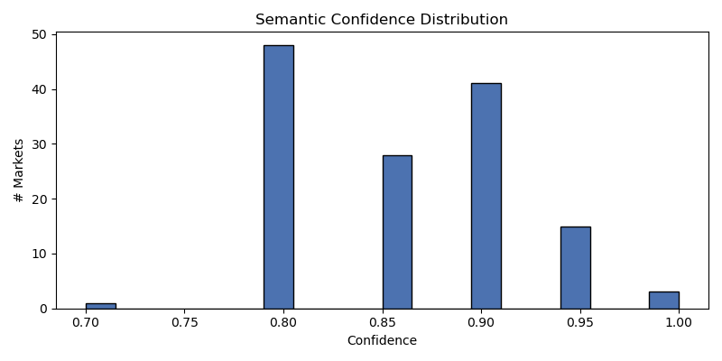
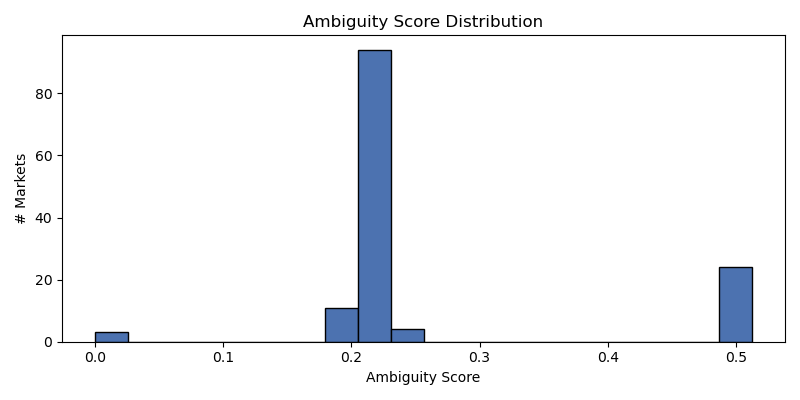
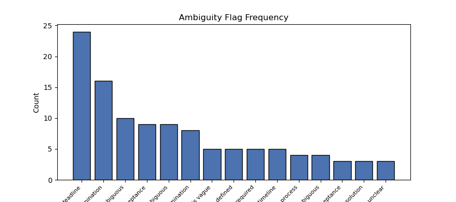

Generated: 2026-05-11T16:19:09Z



| market_id | question | confidence | ambiguity | market_type | flags | needs_review | model | prompt_version |
|---|---|---|---|---|---|---|---|---|
| 567689 | Zelenskyy out as Ukraine president by end of 2026? | 0.9000 | 0.5062 | binary | ['Temporal resolution is vague', 'Resolution depends on ces… | True | deepseek-r1:8b | market_semantics_v1 |
| 566760 | Will Trump pardon Ghislaine Maxwell by end of 2026? | 0.8500 | 0.5094 | binary | ['Temporal resolution is vague', "Definition of 'credible r… | True | deepseek-r1:8b | market_semantics_v1 |
| 559651 | Xi Jinping out before 2027? | 0.8500 | 0.2208 | binary | ["Definition of 'credible reporting'", "Interpretation of '… | True | deepseek-r1:8b | market_semantics_v1 |
| 560317 | Putin out as President of Russia by December 31, 2026? | 0.8500 | 0.2208 | binary | ["Definition of 'cease to be President'", "What constitutes… | True | deepseek-r1:8b | market_semantics_v1 |
| 573656 | Will Bitcoin hit $150k by December 31, 2026? | 0.9500 | 0.2125 | binary | ['Price volatility', 'Market manipulation risk'] | True | deepseek-r1:8b | market_semantics_v1 |
| 561994 | Will Kristi Noem win the 2028 Republican presidential nomination? | 0.8000 | 0.2250 | binary | ['Acceptance of the nomination is not explicitly defined', … | True | deepseek-r1:8b | market_semantics_v1 |
| 561264 | Will Pete Hegseth win the 2028 US Presidential Election? | 0.8500 | 0.2208 | binary | ["The definition of 'winning' might depend on the sources' … | True | deepseek-r1:8b | market_semantics_v1 |
| 561263 | Will Eric Trump win the 2028 US Presidential Election? | 0.9000 | 0.2167 | binary | ['Multiple sources required', 'Conditional on media declara… | True | deepseek-r1:8b | market_semantics_v1 |
| 561254 | Will Kim Kardashian win the 2028 US Presidential Election? | 0.8000 | 0.2125 | binary | ["The market depends on media sources' calls, which may be … | True | deepseek-r1:8b | market_semantics_v1 |
| 561234 | Will Marco Rubio win the 2028 US Presidential Election? | 0.9000 | 0.2000 | binary | ['The market resolution depends on the three sources callin… | True | deepseek-r1:8b | market_semantics_v1 |
| 561232 | Will Pete Buttigieg win the 2028 US Presidential Election? | 0.8500 | 0.2208 | binary | ["The market resolution depends on media sources' calls, wh… | True | deepseek-r1:8b | market_semantics_v1 |
| 559664 | Will Raphael Warnock win the 2028 Democratic presidential nomination? | 0.8000 | 0.2250 | binary | ["The market does not specify what constitutes 'winning' th… | True | deepseek-r1:8b | market_semantics_v1 |
| 559662 | Will Mark Cuban win the 2028 Democratic presidential nomination? | 0.9000 | 0.2000 | binary | ['Temporal ambiguity: Nomination acceptance must be by a sp… | True | deepseek-r1:8b | market_semantics_v1 |
| 559661 | Will Jon Ossoff win the 2028 Democratic presidential nomination? | 0.8000 | 0.2250 | binary | ["The market does not specify what constitutes 'winning' th… | True | deepseek-r1:8b | market_semantics_v1 |
| 565065 | Will the Democrats win the 2028 US Presidential Election? | 0.9000 | 0.2000 | binary | ['The market resolves based on source calls, not actual ele… | True | deepseek-r1:8b | market_semantics_v1 |
| 562002 | Will Erika Kirk win the 2028 Republican presidential nomination? | 0.8000 | 0.2250 | binary | ["The market does not specify what constitutes 'winning' th… | True | deepseek-r1:8b | market_semantics_v1 |
| 561996 | Will Tucker Carlson win the 2028 Republican presidential nomination? | 0.8000 | 0.2250 | binary | ['The market does not specify what constitutes an official … | True | deepseek-r1:8b | market_semantics_v1 |
| 561250 | Will Elon Musk win the 2028 US Presidential Election? | 0.8500 | 0.2208 | binary | ['Elon Musk may not be a candidate', 'Potential for multipl… | True | deepseek-r1:8b | market_semantics_v1 |
| 561235 | Will Wes Moore win the 2028 US Presidential Election? | 0.8500 | 0.2062 | binary | ['The market resolution depends on multiple news sources ag… | True | deepseek-r1:8b | market_semantics_v1 |
| 559666 | Will Tim Walz win the 2028 Democratic presidential nomination? | 0.8500 | 0.2208 | binary | ['Temporal ambiguity: Nomination acceptance date not specif… | True | deepseek-r1:8b | market_semantics_v1 |
| 561993 | Will John Thune win the 2028 Republican presidential nomination? | 0.8000 | 0.5125 | binary | ['Acceptance of the nomination may be ambiguous', "Definiti… | True | deepseek-r1:8b | market_semantics_v1 |
| 559682 | Will Hunter Biden win the 2028 Democratic presidential nomination? | 0.9000 | 0.2167 | binary | ['The market resolution depends on the individual winning a… | True | deepseek-r1:8b | market_semantics_v1 |
| 559668 | Will Mark Kelly win the 2028 Democratic presidential nomination? | 0.9000 | 0.2167 | binary | ['Temporal ambiguity: Nomination acceptance may occur at di… | True | deepseek-r1:8b | market_semantics_v1 |
| 562000 | Will Rand Paul win the 2028 Republican presidential nomination? | 0.8000 | 0.2250 | binary | ["The market does not specify what constitutes 'winning' th… | True | deepseek-r1:8b | market_semantics_v1 |
| 561986 | Will Byron Donalds win the 2028 Republican presidential nomination? | 0.9000 | 0.2167 | binary | ['Nomination acceptance timeline', "Definition of 'win' in … | True | deepseek-r1:8b | market_semantics_v1 |
| 561981 | Will Vivek Ramaswamy win the 2028 Republican presidential nomination? | 0.9000 | 0.2167 | binary | ['Nomination acceptance is not explicitly defined', 'Replac… | True | deepseek-r1:8b | market_semantics_v1 |
| 561979 | Will Ron DeSantis win the 2028 Republican presidential nomination? | 0.9000 | 0.2167 | binary | ["The market resolution depends on the Republican Party's n… | True | deepseek-r1:8b | market_semantics_v1 |
| 561978 | Will Donald Trump Jr. win the 2028 Republican presidential nomination? | 0.8000 | 0.5050 | binary | ["The market does not specify what constitutes 'winning' th… | True | deepseek-r1:8b | market_semantics_v1 |
| 561976 | Will Tulsi Gabbard win the 2028 Republican presidential nomination? | 0.9000 | 0.2167 | binary | ["The market resolution depends on the Republican Party's n… | True | deepseek-r1:8b | market_semantics_v1 |
| 561261 | Will Jon Ossoff win the 2028 US Presidential Election? | 0.8500 | 0.2062 | binary | ['The market resolution depends on multiple news sources ag… | True | deepseek-r1:8b | market_semantics_v1 |
| 561233 | Will Josh Shapiro win the 2028 US Presidential Election? | 0.8500 | 0.2208 | binary | ['Multiple sources required for resolution', 'Resolution ba… | True | deepseek-r1:8b | market_semantics_v1 |
| 559663 | Will J.B. Pritzker win the 2028 Democratic presidential nomination? | 0.8000 | 0.2250 | binary | ["The market does not specify what constitutes 'winning' th… | True | deepseek-r1:8b | market_semantics_v1 |
| 562006 | Will Eric Trump win the 2028 Republican presidential nomination? | 0.8000 | 0.2250 | binary | ["The market does not specify what constitutes 'winning' th… | True | deepseek-r1:8b | market_semantics_v1 |
| 561999 | Will Tom Brady win the 2028 Republican presidential nomination? | 0.8500 | 0.2208 | binary | ['Acceptance of nomination may be ambiguous', "Definition o… | True | deepseek-r1:8b | market_semantics_v1 |
| 561259 | Will Ro Khanna win the 2028 US Presidential Election? | 0.9000 | 0.2167 | binary | ['Multiple sources required', 'Resolution based on media de… | True | deepseek-r1:8b | market_semantics_v1 |
| 559688 | Will Andrew Yang win the 2028 Democratic presidential nomination? | 0.9000 | 0.2167 | binary | ['The market resolution depends on acceptance of the nomina… | True | deepseek-r1:8b | market_semantics_v1 |
| 559680 | Will Phil Murphy win the 2028 Democratic presidential nomination? | 0.8000 | 0.2250 | binary | ["The market does not specify what constitutes 'winning' th… | True | deepseek-r1:8b | market_semantics_v1 |
| 559665 | Will Cory Booker win the 2028 Democratic presidential nomination? | 0.8000 | 0.2250 | binary | ["The market does not specify what constitutes 'winning' th… | True | deepseek-r1:8b | market_semantics_v1 |
| 559654 | Will Pete Buttigieg win the 2028 Democratic presidential nomination? | 0.9000 | 0.2167 | binary | ['Nomination acceptance timeline', "Definition of 'win'"] | True | deepseek-r1:8b | market_semantics_v1 |
| 562003 | Will Kim Kardashian win the 2028 Republican presidential nomination? | 0.8000 | 0.2313 | binary | ["The market does not specify what constitutes 'winning' th… | True | deepseek-r1:8b | market_semantics_v1 |
| 562001 | Will Steve Bannon win the 2028 Republican presidential nomination? | 0.8500 | 0.5094 | binary | ['Acceptance of the nomination may be ambiguous', "Definiti… | True | deepseek-r1:8b | market_semantics_v1 |
| 561991 | Will Matt Gaetz win the 2028 Republican presidential nomination? | 0.8500 | 0.2208 | binary | ['Acceptance of the nomination may be ambiguous', "Definiti… | True | deepseek-r1:8b | market_semantics_v1 |
| 561985 | Will Brian Kemp win the 2028 Republican presidential nomination? | 0.9000 | 0.2167 | binary | ['Nomination acceptance may be ambiguous', 'Replacement of … | True | deepseek-r1:8b | market_semantics_v1 |
| 559655 | Will Josh Shapiro win the 2028 Democratic presidential nomination? | 0.8000 | 0.5125 | binary | ['Temporal resolution is vague', 'Acceptance condition may … | True | deepseek-r1:8b | market_semantics_v1 |
| 562005 | Will Thomas Massie win the 2028 Republican presidential nomination? | 0.8000 | 0.2250 | binary | ['Nomination acceptance timeline', "Definition of 'win' in … | True | deepseek-r1:8b | market_semantics_v1 |
| 561982 | Will Sarah Huckabee Sanders win the 2028 Republican presidential nomination? | 0.8500 | 0.2208 | binary | ['Acceptance of the nomination may be ambiguous', "Definiti… | True | deepseek-r1:8b | market_semantics_v1 |
| 561243 | Will Donald Trump win the 2028 US Presidential Election? | 0.9000 | 0.2167 | binary | ['Multiple sources required', 'Resolution based on media de… | True | deepseek-r1:8b | market_semantics_v1 |
| 561231 | Will Alexandria Ocasio-Cortez win the 2028 US Presidential Election? | 0.8500 | 0.2208 | binary | ["The market depends on media sources' calls", 'The resolut… | True | deepseek-r1:8b | market_semantics_v1 |
| 559683 | Will George Clooney win the 2028 Democratic presidential nomination? | 0.8000 | 0.5125 | binary | ["The market does not specify what constitutes 'winning' th… | True | deepseek-r1:8b | market_semantics_v1 |
| 559669 | Will Rahm Emanuel win the 2028 Democratic presidential nomination? | 0.8000 | 0.5125 | binary | ["The market does not specify what constitutes 'winning' th… | True | deepseek-r1:8b | market_semantics_v1 |
| 561995 | Will Mike Pence win the 2028 Republican presidential nomination? | 0.8000 | 0.2250 | binary | ["The market does not specify what constitutes 'winning' th… | True | deepseek-r1:8b | market_semantics_v1 |
| 561983 | Will Greg Abbott win the 2028 Republican presidential nomination? | 0.8000 | 0.2250 | binary | ['Acceptance of the nomination may be ambiguous', "Definiti… | True | deepseek-r1:8b | market_semantics_v1 |
| 561973 | Will Donald Trump win the 2028 Republican presidential nomination? | 0.8000 | 0.5125 | binary | ['Acceptance of the nomination is not explicitly defined', … | True | deepseek-r1:8b | market_semantics_v1 |
| 561252 | Will Dwayne 'The Rock' Johnson win the 2028 US Presidential Election? | 0.9000 | 0.2000 | binary | ['The market resolution depends on the inauguration date, n… | True | deepseek-r1:8b | market_semantics_v1 |
| 561998 | Will Ivanka Trump win the 2028 Republican presidential nomination? | 0.8000 | 0.2313 | binary | ["The market does not specify what constitutes 'winning' th… | True | deepseek-r1:8b | market_semantics_v1 |
| 561257 | Will Michelle Obama win the 2028 US Presidential Election? | 0.9000 | 0.2167 | binary | ['The market resolution depends on three specific sources',… | True | deepseek-r1:8b | market_semantics_v1 |
| 561255 | Will Ivanka Trump win the 2028 US Presidential Election? | 0.9000 | 0.2167 | binary | ['Multiple sources required', 'Resolution based on media de… | True | deepseek-r1:8b | market_semantics_v1 |
| 561245 | Will Nikki Haley win the 2028 US Presidential Election? | 0.8500 | 0.2062 | binary | ['The market resolution depends on media sources declaring … | True | deepseek-r1:8b | market_semantics_v1 |
| 561237 | Will Andy Beshear win the 2028 US Presidential Election? | 0.9000 | 0.2167 | binary | ['Election outcomes depend on vote counting and certificati… | True | deepseek-r1:8b | market_semantics_v1 |
| 559694 | Will Ro Khanna win the 2028 Democratic presidential nomination? | 0.9000 | 0.2167 | binary | ['Temporal ambiguity: Nomination acceptance may occur after… | True | deepseek-r1:8b | market_semantics_v1 |
| 559675 | Will Jon Stewart win the 2028 Democratic presidential nomination? | 0.8000 | 0.2250 | binary | ["The market does not specify what constitutes 'winning' th… | True | deepseek-r1:8b | market_semantics_v1 |
| 559656 | Will Wes Moore win the 2028 Democratic presidential nomination? | 0.8000 | 0.2250 | binary | ["The market does not specify what constitutes 'winning' th… | True | deepseek-r1:8b | market_semantics_v1 |
| 562004 | Will Marjorie Taylor Greene win the 2028 Republican presidential nomination? | 0.9000 | 0.2167 | binary | ['Nomination acceptance is not explicitly defined', 'Replac… | True | deepseek-r1:8b | market_semantics_v1 |
| 561253 | Will Tucker Carlson win the 2028 US Presidential Election? | 0.8000 | 0.2125 | binary | ['The market resolution depends on media sources declaring … | True | deepseek-r1:8b | market_semantics_v1 |
| 559690 | Will Kim Kardashian win the 2028 Democratic presidential nomination? | 0.8000 | 0.5125 | binary | ['Temporal resolution is vague', 'Acceptance condition may … | True | deepseek-r1:8b | market_semantics_v1 |
| 559674 | Will Jared Polis win the 2028 Democratic presidential nomination? | 0.8000 | 0.2250 | binary | ['Acceptance of the nomination is not explicitly defined', … | True | deepseek-r1:8b | market_semantics_v1 |
| 559660 | Will Andy Beshear win the 2028 Democratic presidential nomination? | 0.9000 | 0.5062 | binary | ['Temporal resolution is vague beyond the year', 'Acceptanc… | True | deepseek-r1:8b | market_semantics_v1 |
| 559657 | Will Stephen A. Smith win the 2028 Democratic presidential nomination? | 0.8000 | 0.5050 | binary | ["The market does not specify what constitutes 'winning' th… | True | deepseek-r1:8b | market_semantics_v1 |
| 565064 | Will the Republicans win the 2028 US Presidential Election? | 0.9000 | 0.2167 | binary | ['Multiple candidates possible', 'Third-party candidate cou… | True | deepseek-r1:8b | market_semantics_v1 |
| 561984 | Will Robert F. Kennedy Jr. win the 2028 Republican presidential nomination? | 0.8500 | 0.2208 | binary | ['Nomination acceptance timeline', "Definition of 'win' in … | True | deepseek-r1:8b | market_semantics_v1 |
| 561975 | Will Marco Rubio win the 2028 Republican presidential nomination? | 0.8000 | 0.5125 | binary | ["The market does not specify what constitutes 'winning' th… | True | deepseek-r1:8b | market_semantics_v1 |
| 561262 | Will James Talarico win the 2028 US Presidential Election? | 0.9000 | 0.2000 | binary | ['The market resolution depends on the three sources callin… | True | deepseek-r1:8b | market_semantics_v1 |
| 559679 | Will Bernie Sanders win the 2028 Democratic presidential nomination? | 0.8000 | 0.2250 | binary | ["The market does not specify what constitutes 'winning' th… | True | deepseek-r1:8b | market_semantics_v1 |
| 559658 | Will Kamala Harris win the 2028 Democratic presidential nomination? | 0.9000 | 0.5062 | binary | ['Nomination acceptance timeline', 'Replacement of nominee'… | True | deepseek-r1:8b | market_semantics_v1 |
| 561992 | Will Katie Britt win the 2028 Republican presidential nomination? | 0.8000 | 0.2125 | binary | ['Acceptance of the nomination is not explicitly defined'] | True | deepseek-r1:8b | market_semantics_v1 |
| 561236 | Will Gretchen Whitmer win the 2028 US Presidential Election? | 0.8000 | 0.2125 | binary | ['The market depends on media sources declaring the winner,… | True | deepseek-r1:8b | market_semantics_v1 |
| 559678 | Will Liz Cheney win the 2028 Democratic presidential nomination? | 0.9500 | 0.5125 | binary | ['The market does not resolve if the nominee is replaced be… | True | deepseek-r1:8b | market_semantics_v1 |
| 559667 | Will Michelle Obama win the 2028 Democratic presidential nomination? | 0.8000 | 0.2250 | binary | ["The market does not specify what constitutes 'winning' th… | True | deepseek-r1:8b | market_semantics_v1 |
| 561990 | Will Elon Musk win the 2028 Republican presidential nomination? | 0.8000 | 0.5125 | binary | ['Acceptance of the nomination may be ambiguous', "Definiti… | True | deepseek-r1:8b | market_semantics_v1 |
| 561260 | Will Thomas Massie win the 2028 US Presidential Election? | 0.8000 | 0.2250 | binary | ['Election outcome depends on multiple sources', 'Resolutio… | True | deepseek-r1:8b | market_semantics_v1 |
| 559692 | Will Jasmine Crockett win the 2028 Democratic presidential nomination? | 0.9000 | 0.5062 | binary | ['Temporal resolution is vague beyond the year', 'Acceptanc… | True | deepseek-r1:8b | market_semantics_v1 |
| 559685 | Will MrBeast win the 2028 Democratic presidential nomination? | 0.9000 | 0.2167 | binary | ['Temporal resolution is exact date', 'Acceptance condition… | True | deepseek-r1:8b | market_semantics_v1 |
| 559673 | Will John Fetterman win the 2028 Democratic presidential nomination? | 0.8000 | 0.2250 | binary | ["The market does not specify what constitutes 'winning' th… | True | deepseek-r1:8b | market_semantics_v1 |
| 559672 | Will Roy Cooper win the 2028 Democratic presidential nomination? | 0.9500 | 0.1938 | binary | ['The market does not resolve if the nomination is replaced… | True | deepseek-r1:8b | market_semantics_v1 |
| 559653 | Will Alexandria Ocasio-Cortez win the 2028 Democratic presidential nomination? | 0.9500 | 0.2125 | binary | ['Temporal resolution is exact date', 'Acceptance condition… | True | deepseek-r1:8b | market_semantics_v1 |
| 559652 | Will Gavin Newsom win the 2028 Democratic presidential nomination? | 0.9000 | 0.2167 | binary | ['Nomination acceptance may be ambiguous', "Definition of '… | True | deepseek-r1:8b | market_semantics_v1 |
| 562008 | Will Pete Hegsetd win the 2028 Republican presidential nomination? | 0.8000 | 0.2313 | binary | ["The market does not specify what constitutes 'winning' th… | True | deepseek-r1:8b | market_semantics_v1 |
| 561974 | Will J.D. Vance win the 2028 Republican presidential nomination? | 0.8000 | 0.2250 | binary | ['Acceptance of the nomination is not explicitly defined', … | True | deepseek-r1:8b | market_semantics_v1 |
| 561248 | Will Vivek Ramaswamy win the 2028 US Presidential Election? | 0.9000 | 0.2167 | binary | ['Election resolution depends on multiple sources', 'Possib… | True | deepseek-r1:8b | market_semantics_v1 |
| 561244 | Will Donald Trump Jr. win the 2028 US Presidential Election? | 0.8500 | 0.2062 | binary | ["The market resolution depends on media sources' calls, wh… | True | deepseek-r1:8b | market_semantics_v1 |
| 561242 | Will Tulsi Gabbard win the 2028 US Presidential Election? | 0.8000 | 0.2125 | binary | ['The market resolution depends on the three sources callin… | True | deepseek-r1:8b | market_semantics_v1 |
| 559695 | Will James Talarico win the 2028 Democratic presidential nomination? | 0.9000 | 0.2000 | binary | ["The market does not specify what constitutes 'winning' th… | True | deepseek-r1:8b | market_semantics_v1 |
| 559689 | Will Beto O’Rourke win the 2028 Democratic presidential nomination? | 0.9500 | 0.2125 | binary | ['Temporal resolution is fixed to 2028', 'Acceptance condit… | True | deepseek-r1:8b | market_semantics_v1 |
| 559686 | Will Dwayne 'The Rock' Johnson win the 2028 Democratic presidential nomination? | 0.9000 | 0.2167 | binary | ['Nomination acceptance by Johnson', "Definition of 'win' i… | True | deepseek-r1:8b | market_semantics_v1 |
| 559677 | Will Hillary Clinton win the 2028 Democratic presidential nomination? | 0.9000 | 0.5062 | binary | ['The market does not resolve if the nomination is replaced… | True | deepseek-r1:8b | market_semantics_v1 |
| 559670 | Will Gina Raimondo win the 2028 Democratic presidential nomination? | 0.8000 | 0.2250 | binary | ["The market does not specify what constitutes 'winning' th… | True | deepseek-r1:8b | market_semantics_v1 |
| 559659 | Will Gretchen Whitmer win the 2028 Democratic presidential nomination? | 0.8000 | 0.2250 | binary | ["The market does not specify what constitutes 'winning' th… | True | deepseek-r1:8b | market_semantics_v1 |
| 561988 | Will Josh Hawley win the 2028 Republican presidential nomination? | 0.9000 | 0.5062 | binary | ['Temporal resolution is vague due to unspecified timing wi… | True | deepseek-r1:8b | market_semantics_v1 |
| 561980 | Will Nikki Haley win the 2028 Republican presidential nomination? | 0.8000 | 0.2250 | binary | ['Acceptance of the nomination may be ambiguous', "Definiti… | True | deepseek-r1:8b | market_semantics_v1 |
| 561251 | Will LeBron James win the 2028 US Presidential Election? | 0.8000 | 0.2125 | binary | ['The market resolution depends on multiple news sources, w… | True | deepseek-r1:8b | market_semantics_v1 |
| 561241 | Will JB Pritzker win the 2028 US Presidential Election? | 0.8500 | 0.2208 | binary | ['Election resolution depends on media sources', "Potential… | True | deepseek-r1:8b | market_semantics_v1 |
| 559684 | Will Chelsea Clinton win the 2028 Democratic presidential nomination? | 0.9500 | 0.5125 | binary | ['Nominee replacement does not affect resolution', 'vague_d… | True | deepseek-r1:8b | market_semantics_v1 |
| 559681 | Will LeBron James win the 2028 Democratic presidential nomination? | 0.8000 | 0.5050 | binary | ["The market does not specify what constitutes 'winning' th… | True | deepseek-r1:8b | market_semantics_v1 |
| 562007 | Will Joe Kent win the 2028 Republican presidential nomination? | 0.8000 | 0.2250 | binary | ['Acceptance of nomination may be ambiguous', "Definition o… | True | deepseek-r1:8b | market_semantics_v1 |
| 561989 | Will Ted Cruz win the 2028 Republican presidential nomination? | 0.9500 | 0.5031 | binary | ["The market resolution depends on Ted Cruz's acceptance of… | True | deepseek-r1:8b | market_semantics_v1 |
| 561987 | Will Elise Stefanik win the 2028 Republican presidential nomination? | 0.8000 | 0.2250 | binary | ['Acceptance of the nomination may be ambiguous', "Definiti… | True | deepseek-r1:8b | market_semantics_v1 |
| 561977 | Will Glenn Youngkin win the 2028 Republican presidential nomination? | 0.8000 | 0.5125 | binary | ['Acceptance of the nomination may be ambiguous', "Definiti… | True | deepseek-r1:8b | market_semantics_v1 |
| 561258 | Will Jamie Dimon win the 2028 US Presidential Election? | 0.8500 | 0.2062 | binary | ['The market resolution depends on media sources declaring … | True | deepseek-r1:8b | market_semantics_v1 |
| 561247 | Will Tim Walz win the 2028 US Presidential Election? | 0.8500 | 0.2208 | binary | ['Multiple news sources required for resolution', 'Resoluti… | True | deepseek-r1:8b | market_semantics_v1 |
| 561239 | Will Kamala Harris win the 2028 US Presidential Election? | 0.8500 | 0.2208 | binary | ['The market resolution depends on media sources, which may… | True | deepseek-r1:8b | market_semantics_v1 |
| 559693 | Will Ruben Gallego win the 2028 Democratic presidential nomination? | 0.9000 | 0.2167 | binary | ['Nominee acceptance is not explicitly defined', 'Replaceme… | True | deepseek-r1:8b | market_semantics_v1 |
| 559691 | Will Chris Murphy win the 2028 Democratic presidential nomination? | 0.8500 | 0.2208 | binary | ['Acceptance of nomination may be ambiguous', "Definition o… | True | deepseek-r1:8b | market_semantics_v1 |
| 559687 | Will Oprah Winfrey win the 2028 Democratic presidential nomination? | 0.9000 | 0.2167 | binary | ['Temporal resolution is exact date but event is future', '… | True | deepseek-r1:8b | market_semantics_v1 |
| 559676 | Will Barack Obama win the 2028 Democratic presidential nomination? | 0.8000 | 0.2250 | binary | ["The market does not specify what constitutes 'winning' th… | True | deepseek-r1:8b | market_semantics_v1 |
| 559671 | Will Zohran Mamdani win the 2028 Democratic presidential nomination? | 0.9500 | 0.2125 | binary | ['Temporal resolution is exact date', 'Acceptance condition… | True | deepseek-r1:8b | market_semantics_v1 |
| 553838 | Will the Minnesota Wild win the 2026 NHL Stanley Cup? | 0.9000 | 0.2167 | binary | ["The market resolution depends on the NHL's determination … | True | deepseek-r1:8b | market_semantics_v1 |
| 540820 | Trump out as President before GTA VI? | 0.8500 | 0.2281 | binary | ["Definition of 'cease to be President' (e.g., resignation,… | True | deepseek-r1:8b | market_semantics_v1 |
| 540881 | GTA VI released before June 2026? | 0.9500 | 0.5125 | binary | ['Release definition includes only official sources', 'vagu… | True | deepseek-r1:8b | market_semantics_v1 |
| 540819 | Will Jesus Christ return before GTA VI? | 0.7000 | 0.2333 | binary | ["Temporal ambiguity due to vague definition of 'return'", … | True | deepseek-r1:8b | market_semantics_v1 |
| 540843 | Will China invades Taiwan before GTA VI? | 0.8500 | 0.2281 | binary | ['Military offensive definition', 'GTA VI release definitio… | True | deepseek-r1:8b | market_semantics_v1 |
| 540817 | New Rihanna Album before GTA VI? | 0.8500 | 0.2208 | binary | ["Definition of 'new' album is not explicitly defined (coul… | True | deepseek-r1:8b | market_semantics_v1 |
| 553828 | Will the Colorado Avalanche win the 2026 NHL Stanley Cup? | 0.9000 | 0.2167 | binary | ['Temporal resolution depends on NHL schedule', "Definition… | True | deepseek-r1:8b | market_semantics_v1 |
| 540818 | New Playboi Carti Album before GTA VI? | 0.8500 | 0.2208 | binary | ['Release definitions may vary (e.g., what constitutes an o… | True | deepseek-r1:8b | market_semantics_v1 |
| 540844 | Will bitcoin hit $1m before GTA VI? | 0.9000 | 0.2167 | binary | ['Temporal resolution is vague', 'Release definition may be… | True | deepseek-r1:8b | market_semantics_v1 |
| market_id | question | confidence | ambiguity | market_type | flags | needs_review | model | prompt_version |
|---|---|---|---|---|---|---|---|---|
| 567689 | Zelenskyy out as Ukraine president by end of 2026? | 0.9000 | 0.5062 | binary | ['Temporal resolution is vague', 'Resolution depends on ces… | True | deepseek-r1:8b | market_semantics_v1 |
| 566760 | Will Trump pardon Ghislaine Maxwell by end of 2026? | 0.8500 | 0.5094 | binary | ['Temporal resolution is vague', "Definition of 'credible r… | True | deepseek-r1:8b | market_semantics_v1 |
| 559651 | Xi Jinping out before 2027? | 0.8500 | 0.2208 | binary | ["Definition of 'credible reporting'", "Interpretation of '… | True | deepseek-r1:8b | market_semantics_v1 |
| 560317 | Putin out as President of Russia by December 31, 2026? | 0.8500 | 0.2208 | binary | ["Definition of 'cease to be President'", "What constitutes… | True | deepseek-r1:8b | market_semantics_v1 |
| 573656 | Will Bitcoin hit $150k by December 31, 2026? | 0.9500 | 0.2125 | binary | ['Price volatility', 'Market manipulation risk'] | True | deepseek-r1:8b | market_semantics_v1 |
| 561994 | Will Kristi Noem win the 2028 Republican presidential nomination? | 0.8000 | 0.2250 | binary | ['Acceptance of the nomination is not explicitly defined', … | True | deepseek-r1:8b | market_semantics_v1 |
| 561264 | Will Pete Hegseth win the 2028 US Presidential Election? | 0.8500 | 0.2208 | binary | ["The definition of 'winning' might depend on the sources' … | True | deepseek-r1:8b | market_semantics_v1 |
| 561263 | Will Eric Trump win the 2028 US Presidential Election? | 0.9000 | 0.2167 | binary | ['Multiple sources required', 'Conditional on media declara… | True | deepseek-r1:8b | market_semantics_v1 |
| 561254 | Will Kim Kardashian win the 2028 US Presidential Election? | 0.8000 | 0.2125 | binary | ["The market depends on media sources' calls, which may be … | True | deepseek-r1:8b | market_semantics_v1 |
| 561234 | Will Marco Rubio win the 2028 US Presidential Election? | 0.9000 | 0.2000 | binary | ['The market resolution depends on the three sources callin… | True | deepseek-r1:8b | market_semantics_v1 |
| 561232 | Will Pete Buttigieg win the 2028 US Presidential Election? | 0.8500 | 0.2208 | binary | ["The market resolution depends on media sources' calls, wh… | True | deepseek-r1:8b | market_semantics_v1 |
| 559664 | Will Raphael Warnock win the 2028 Democratic presidential nomination? | 0.8000 | 0.2250 | binary | ["The market does not specify what constitutes 'winning' th… | True | deepseek-r1:8b | market_semantics_v1 |
| 559662 | Will Mark Cuban win the 2028 Democratic presidential nomination? | 0.9000 | 0.2000 | binary | ['Temporal ambiguity: Nomination acceptance must be by a sp… | True | deepseek-r1:8b | market_semantics_v1 |
| 559661 | Will Jon Ossoff win the 2028 Democratic presidential nomination? | 0.8000 | 0.2250 | binary | ["The market does not specify what constitutes 'winning' th… | True | deepseek-r1:8b | market_semantics_v1 |
| 565065 | Will the Democrats win the 2028 US Presidential Election? | 0.9000 | 0.2000 | binary | ['The market resolves based on source calls, not actual ele… | True | deepseek-r1:8b | market_semantics_v1 |
| 562002 | Will Erika Kirk win the 2028 Republican presidential nomination? | 0.8000 | 0.2250 | binary | ["The market does not specify what constitutes 'winning' th… | True | deepseek-r1:8b | market_semantics_v1 |
| 561996 | Will Tucker Carlson win the 2028 Republican presidential nomination? | 0.8000 | 0.2250 | binary | ['The market does not specify what constitutes an official … | True | deepseek-r1:8b | market_semantics_v1 |
| 561250 | Will Elon Musk win the 2028 US Presidential Election? | 0.8500 | 0.2208 | binary | ['Elon Musk may not be a candidate', 'Potential for multipl… | True | deepseek-r1:8b | market_semantics_v1 |
| 561235 | Will Wes Moore win the 2028 US Presidential Election? | 0.8500 | 0.2062 | binary | ['The market resolution depends on multiple news sources ag… | True | deepseek-r1:8b | market_semantics_v1 |
| 559666 | Will Tim Walz win the 2028 Democratic presidential nomination? | 0.8500 | 0.2208 | binary | ['Temporal ambiguity: Nomination acceptance date not specif… | True | deepseek-r1:8b | market_semantics_v1 |
| 561993 | Will John Thune win the 2028 Republican presidential nomination? | 0.8000 | 0.5125 | binary | ['Acceptance of the nomination may be ambiguous', "Definiti… | True | deepseek-r1:8b | market_semantics_v1 |
| 559682 | Will Hunter Biden win the 2028 Democratic presidential nomination? | 0.9000 | 0.2167 | binary | ['The market resolution depends on the individual winning a… | True | deepseek-r1:8b | market_semantics_v1 |
| 559668 | Will Mark Kelly win the 2028 Democratic presidential nomination? | 0.9000 | 0.2167 | binary | ['Temporal ambiguity: Nomination acceptance may occur at di… | True | deepseek-r1:8b | market_semantics_v1 |
| 562000 | Will Rand Paul win the 2028 Republican presidential nomination? | 0.8000 | 0.2250 | binary | ["The market does not specify what constitutes 'winning' th… | True | deepseek-r1:8b | market_semantics_v1 |
| 561986 | Will Byron Donalds win the 2028 Republican presidential nomination? | 0.9000 | 0.2167 | binary | ['Nomination acceptance timeline', "Definition of 'win' in … | True | deepseek-r1:8b | market_semantics_v1 |
| 561981 | Will Vivek Ramaswamy win the 2028 Republican presidential nomination? | 0.9000 | 0.2167 | binary | ['Nomination acceptance is not explicitly defined', 'Replac… | True | deepseek-r1:8b | market_semantics_v1 |
| 561979 | Will Ron DeSantis win the 2028 Republican presidential nomination? | 0.9000 | 0.2167 | binary | ["The market resolution depends on the Republican Party's n… | True | deepseek-r1:8b | market_semantics_v1 |
| 561978 | Will Donald Trump Jr. win the 2028 Republican presidential nomination? | 0.8000 | 0.5050 | binary | ["The market does not specify what constitutes 'winning' th… | True | deepseek-r1:8b | market_semantics_v1 |
| 561976 | Will Tulsi Gabbard win the 2028 Republican presidential nomination? | 0.9000 | 0.2167 | binary | ["The market resolution depends on the Republican Party's n… | True | deepseek-r1:8b | market_semantics_v1 |
| 561261 | Will Jon Ossoff win the 2028 US Presidential Election? | 0.8500 | 0.2062 | binary | ['The market resolution depends on multiple news sources ag… | True | deepseek-r1:8b | market_semantics_v1 |
| 561233 | Will Josh Shapiro win the 2028 US Presidential Election? | 0.8500 | 0.2208 | binary | ['Multiple sources required for resolution', 'Resolution ba… | True | deepseek-r1:8b | market_semantics_v1 |
| 559663 | Will J.B. Pritzker win the 2028 Democratic presidential nomination? | 0.8000 | 0.2250 | binary | ["The market does not specify what constitutes 'winning' th… | True | deepseek-r1:8b | market_semantics_v1 |
| 562006 | Will Eric Trump win the 2028 Republican presidential nomination? | 0.8000 | 0.2250 | binary | ["The market does not specify what constitutes 'winning' th… | True | deepseek-r1:8b | market_semantics_v1 |
| 561999 | Will Tom Brady win the 2028 Republican presidential nomination? | 0.8500 | 0.2208 | binary | ['Acceptance of nomination may be ambiguous', "Definition o… | True | deepseek-r1:8b | market_semantics_v1 |
| 561259 | Will Ro Khanna win the 2028 US Presidential Election? | 0.9000 | 0.2167 | binary | ['Multiple sources required', 'Resolution based on media de… | True | deepseek-r1:8b | market_semantics_v1 |
| 561256 | Will Zohran Mamdani win the 2028 US Presidential Election? | 0.9000 | 0.2167 | binary | ['Multiple sources required for resolution', 'Resolution ba… | False | deepseek-r1:8b | market_semantics_v1 |
| 561238 | Will Glenn Youngkin win the 2028 US Presidential Election? | 0.9000 | 0.2000 | binary | ['The market resolution depends on multiple news sources ag… | False | deepseek-r1:8b | market_semantics_v1 |
| 561230 | Will Gavin Newsom win the 2028 US Presidential Election? | 0.9500 | 0.2125 | binary | ['Multiple news sources required', 'Resolution based on sou… | False | deepseek-r1:8b | market_semantics_v1 |
| 561229 | Will JD Vance win the 2028 US Presidential Election? | 0.9500 | 0.1938 | binary | ['The market resolution depends on the three sources callin… | False | deepseek-r1:8b | market_semantics_v1 |
| 559688 | Will Andrew Yang win the 2028 Democratic presidential nomination? | 0.9000 | 0.2167 | binary | ['The market resolution depends on acceptance of the nomina… | True | deepseek-r1:8b | market_semantics_v1 |
| 559680 | Will Phil Murphy win the 2028 Democratic presidential nomination? | 0.8000 | 0.2250 | binary | ["The market does not specify what constitutes 'winning' th… | True | deepseek-r1:8b | market_semantics_v1 |
| 559665 | Will Cory Booker win the 2028 Democratic presidential nomination? | 0.8000 | 0.2250 | binary | ["The market does not specify what constitutes 'winning' th… | True | deepseek-r1:8b | market_semantics_v1 |
| 559654 | Will Pete Buttigieg win the 2028 Democratic presidential nomination? | 0.9000 | 0.2167 | binary | ['Nomination acceptance timeline', "Definition of 'win'"] | True | deepseek-r1:8b | market_semantics_v1 |
| 562003 | Will Kim Kardashian win the 2028 Republican presidential nomination? | 0.8000 | 0.2313 | binary | ["The market does not specify what constitutes 'winning' th… | True | deepseek-r1:8b | market_semantics_v1 |
| 562001 | Will Steve Bannon win the 2028 Republican presidential nomination? | 0.8500 | 0.5094 | binary | ['Acceptance of the nomination may be ambiguous', "Definiti… | True | deepseek-r1:8b | market_semantics_v1 |
| 561991 | Will Matt Gaetz win the 2028 Republican presidential nomination? | 0.8500 | 0.2208 | binary | ['Acceptance of the nomination may be ambiguous', "Definiti… | True | deepseek-r1:8b | market_semantics_v1 |
| 561985 | Will Brian Kemp win the 2028 Republican presidential nomination? | 0.9000 | 0.2167 | binary | ['Nomination acceptance may be ambiguous', 'Replacement of … | True | deepseek-r1:8b | market_semantics_v1 |
| 559655 | Will Josh Shapiro win the 2028 Democratic presidential nomination? | 0.8000 | 0.5125 | binary | ['Temporal resolution is vague', 'Acceptance condition may … | True | deepseek-r1:8b | market_semantics_v1 |
| 562005 | Will Thomas Massie win the 2028 Republican presidential nomination? | 0.8000 | 0.2250 | binary | ['Nomination acceptance timeline', "Definition of 'win' in … | True | deepseek-r1:8b | market_semantics_v1 |
| 561982 | Will Sarah Huckabee Sanders win the 2028 Republican presidential nomination? | 0.8500 | 0.2208 | binary | ['Acceptance of the nomination may be ambiguous', "Definiti… | True | deepseek-r1:8b | market_semantics_v1 |
| 561243 | Will Donald Trump win the 2028 US Presidential Election? | 0.9000 | 0.2167 | binary | ['Multiple sources required', 'Resolution based on media de… | True | deepseek-r1:8b | market_semantics_v1 |
| 561231 | Will Alexandria Ocasio-Cortez win the 2028 US Presidential Election? | 0.8500 | 0.2208 | binary | ["The market depends on media sources' calls", 'The resolut… | True | deepseek-r1:8b | market_semantics_v1 |
| 559683 | Will George Clooney win the 2028 Democratic presidential nomination? | 0.8000 | 0.5125 | binary | ["The market does not specify what constitutes 'winning' th… | True | deepseek-r1:8b | market_semantics_v1 |
| 559669 | Will Rahm Emanuel win the 2028 Democratic presidential nomination? | 0.8000 | 0.5125 | binary | ["The market does not specify what constitutes 'winning' th… | True | deepseek-r1:8b | market_semantics_v1 |
| 561995 | Will Mike Pence win the 2028 Republican presidential nomination? | 0.8000 | 0.2250 | binary | ["The market does not specify what constitutes 'winning' th… | True | deepseek-r1:8b | market_semantics_v1 |
| 561983 | Will Greg Abbott win the 2028 Republican presidential nomination? | 0.8000 | 0.2250 | binary | ['Acceptance of the nomination may be ambiguous', "Definiti… | True | deepseek-r1:8b | market_semantics_v1 |
| 561973 | Will Donald Trump win the 2028 Republican presidential nomination? | 0.8000 | 0.5125 | binary | ['Acceptance of the nomination is not explicitly defined', … | True | deepseek-r1:8b | market_semantics_v1 |
| 561252 | Will Dwayne 'The Rock' Johnson win the 2028 US Presidential Election? | 0.9000 | 0.2000 | binary | ['The market resolution depends on the inauguration date, n… | True | deepseek-r1:8b | market_semantics_v1 |
| 561998 | Will Ivanka Trump win the 2028 Republican presidential nomination? | 0.8000 | 0.2313 | binary | ["The market does not specify what constitutes 'winning' th… | True | deepseek-r1:8b | market_semantics_v1 |
| 561257 | Will Michelle Obama win the 2028 US Presidential Election? | 0.9000 | 0.2167 | binary | ['The market resolution depends on three specific sources',… | True | deepseek-r1:8b | market_semantics_v1 |
| 561255 | Will Ivanka Trump win the 2028 US Presidential Election? | 0.9000 | 0.2167 | binary | ['Multiple sources required', 'Resolution based on media de… | True | deepseek-r1:8b | market_semantics_v1 |
| 561245 | Will Nikki Haley win the 2028 US Presidential Election? | 0.8500 | 0.2062 | binary | ['The market resolution depends on media sources declaring … | True | deepseek-r1:8b | market_semantics_v1 |
| 561237 | Will Andy Beshear win the 2028 US Presidential Election? | 0.9000 | 0.2167 | binary | ['Election outcomes depend on vote counting and certificati… | True | deepseek-r1:8b | market_semantics_v1 |
| 559694 | Will Ro Khanna win the 2028 Democratic presidential nomination? | 0.9000 | 0.2167 | binary | ['Temporal ambiguity: Nomination acceptance may occur after… | True | deepseek-r1:8b | market_semantics_v1 |
| 559675 | Will Jon Stewart win the 2028 Democratic presidential nomination? | 0.8000 | 0.2250 | binary | ["The market does not specify what constitutes 'winning' th… | True | deepseek-r1:8b | market_semantics_v1 |
| 559656 | Will Wes Moore win the 2028 Democratic presidential nomination? | 0.8000 | 0.2250 | binary | ["The market does not specify what constitutes 'winning' th… | True | deepseek-r1:8b | market_semantics_v1 |
| 562004 | Will Marjorie Taylor Greene win the 2028 Republican presidential nomination? | 0.9000 | 0.2167 | binary | ['Nomination acceptance is not explicitly defined', 'Replac… | True | deepseek-r1:8b | market_semantics_v1 |
| 561253 | Will Tucker Carlson win the 2028 US Presidential Election? | 0.8000 | 0.2125 | binary | ['The market resolution depends on media sources declaring … | True | deepseek-r1:8b | market_semantics_v1 |
| 561246 | Will Ron DeSantis win the 2028 US Presidential Election? | 0.9500 | 0.2125 | binary | ['Multiple sources required', 'Resolution based on source d… | False | deepseek-r1:8b | market_semantics_v1 |
| 559690 | Will Kim Kardashian win the 2028 Democratic presidential nomination? | 0.8000 | 0.5125 | binary | ['Temporal resolution is vague', 'Acceptance condition may … | True | deepseek-r1:8b | market_semantics_v1 |
| 559674 | Will Jared Polis win the 2028 Democratic presidential nomination? | 0.8000 | 0.2250 | binary | ['Acceptance of the nomination is not explicitly defined', … | True | deepseek-r1:8b | market_semantics_v1 |
| 559660 | Will Andy Beshear win the 2028 Democratic presidential nomination? | 0.9000 | 0.5062 | binary | ['Temporal resolution is vague beyond the year', 'Acceptanc… | True | deepseek-r1:8b | market_semantics_v1 |
| 559657 | Will Stephen A. Smith win the 2028 Democratic presidential nomination? | 0.8000 | 0.5050 | binary | ["The market does not specify what constitutes 'winning' th… | True | deepseek-r1:8b | market_semantics_v1 |
| 565064 | Will the Republicans win the 2028 US Presidential Election? | 0.9000 | 0.2167 | binary | ['Multiple candidates possible', 'Third-party candidate cou… | True | deepseek-r1:8b | market_semantics_v1 |
| 561984 | Will Robert F. Kennedy Jr. win the 2028 Republican presidential nomination? | 0.8500 | 0.2208 | binary | ['Nomination acceptance timeline', "Definition of 'win' in … | True | deepseek-r1:8b | market_semantics_v1 |
| 561975 | Will Marco Rubio win the 2028 Republican presidential nomination? | 0.8000 | 0.5125 | binary | ["The market does not specify what constitutes 'winning' th… | True | deepseek-r1:8b | market_semantics_v1 |
| 561262 | Will James Talarico win the 2028 US Presidential Election? | 0.9000 | 0.2000 | binary | ['The market resolution depends on the three sources callin… | True | deepseek-r1:8b | market_semantics_v1 |
| 559679 | Will Bernie Sanders win the 2028 Democratic presidential nomination? | 0.8000 | 0.2250 | binary | ["The market does not specify what constitutes 'winning' th… | True | deepseek-r1:8b | market_semantics_v1 |
| 559658 | Will Kamala Harris win the 2028 Democratic presidential nomination? | 0.9000 | 0.5062 | binary | ['Nomination acceptance timeline', 'Replacement of nominee'… | True | deepseek-r1:8b | market_semantics_v1 |
| 561992 | Will Katie Britt win the 2028 Republican presidential nomination? | 0.8000 | 0.2125 | binary | ['Acceptance of the nomination is not explicitly defined'] | True | deepseek-r1:8b | market_semantics_v1 |
| 561240 | Will Stephen Smith win the 2028 US Presidential Election? | 0.9500 | 0.1938 | binary | ['The market resolution depends on the three sources callin… | False | deepseek-r1:8b | market_semantics_v1 |
| 561236 | Will Gretchen Whitmer win the 2028 US Presidential Election? | 0.8000 | 0.2125 | binary | ['The market depends on media sources declaring the winner,… | True | deepseek-r1:8b | market_semantics_v1 |
| 559678 | Will Liz Cheney win the 2028 Democratic presidential nomination? | 0.9500 | 0.5125 | binary | ['The market does not resolve if the nominee is replaced be… | True | deepseek-r1:8b | market_semantics_v1 |
| 559667 | Will Michelle Obama win the 2028 Democratic presidential nomination? | 0.8000 | 0.2250 | binary | ["The market does not specify what constitutes 'winning' th… | True | deepseek-r1:8b | market_semantics_v1 |
| 561990 | Will Elon Musk win the 2028 Republican presidential nomination? | 0.8000 | 0.5125 | binary | ['Acceptance of the nomination may be ambiguous', "Definiti… | True | deepseek-r1:8b | market_semantics_v1 |
| 561260 | Will Thomas Massie win the 2028 US Presidential Election? | 0.8000 | 0.2250 | binary | ['Election outcome depends on multiple sources', 'Resolutio… | True | deepseek-r1:8b | market_semantics_v1 |
| 559692 | Will Jasmine Crockett win the 2028 Democratic presidential nomination? | 0.9000 | 0.5062 | binary | ['Temporal resolution is vague beyond the year', 'Acceptanc… | True | deepseek-r1:8b | market_semantics_v1 |
| 559685 | Will MrBeast win the 2028 Democratic presidential nomination? | 0.9000 | 0.2167 | binary | ['Temporal resolution is exact date', 'Acceptance condition… | True | deepseek-r1:8b | market_semantics_v1 |
| 559673 | Will John Fetterman win the 2028 Democratic presidential nomination? | 0.8000 | 0.2250 | binary | ["The market does not specify what constitutes 'winning' th… | True | deepseek-r1:8b | market_semantics_v1 |
| 559672 | Will Roy Cooper win the 2028 Democratic presidential nomination? | 0.9500 | 0.1938 | binary | ['The market does not resolve if the nomination is replaced… | True | deepseek-r1:8b | market_semantics_v1 |
| 559653 | Will Alexandria Ocasio-Cortez win the 2028 Democratic presidential nomination? | 0.9500 | 0.2125 | binary | ['Temporal resolution is exact date', 'Acceptance condition… | True | deepseek-r1:8b | market_semantics_v1 |
| 559652 | Will Gavin Newsom win the 2028 Democratic presidential nomination? | 0.9000 | 0.2167 | binary | ['Nomination acceptance may be ambiguous', "Definition of '… | True | deepseek-r1:8b | market_semantics_v1 |
| 562008 | Will Pete Hegsetd win the 2028 Republican presidential nomination? | 0.8000 | 0.2313 | binary | ["The market does not specify what constitutes 'winning' th… | True | deepseek-r1:8b | market_semantics_v1 |
| 561974 | Will J.D. Vance win the 2028 Republican presidential nomination? | 0.8000 | 0.2250 | binary | ['Acceptance of the nomination is not explicitly defined', … | True | deepseek-r1:8b | market_semantics_v1 |
| 561248 | Will Vivek Ramaswamy win the 2028 US Presidential Election? | 0.9000 | 0.2167 | binary | ['Election resolution depends on multiple sources', 'Possib… | True | deepseek-r1:8b | market_semantics_v1 |
| 561244 | Will Donald Trump Jr. win the 2028 US Presidential Election? | 0.8500 | 0.2062 | binary | ["The market resolution depends on media sources' calls, wh… | True | deepseek-r1:8b | market_semantics_v1 |
| 561242 | Will Tulsi Gabbard win the 2028 US Presidential Election? | 0.8000 | 0.2125 | binary | ['The market resolution depends on the three sources callin… | True | deepseek-r1:8b | market_semantics_v1 |
| 559695 | Will James Talarico win the 2028 Democratic presidential nomination? | 0.9000 | 0.2000 | binary | ["The market does not specify what constitutes 'winning' th… | True | deepseek-r1:8b | market_semantics_v1 |
| 559689 | Will Beto O’Rourke win the 2028 Democratic presidential nomination? | 0.9500 | 0.2125 | binary | ['Temporal resolution is fixed to 2028', 'Acceptance condit… | True | deepseek-r1:8b | market_semantics_v1 |
| 559686 | Will Dwayne 'The Rock' Johnson win the 2028 Democratic presidential nomination? | 0.9000 | 0.2167 | binary | ['Nomination acceptance by Johnson', "Definition of 'win' i… | True | deepseek-r1:8b | market_semantics_v1 |
| 559677 | Will Hillary Clinton win the 2028 Democratic presidential nomination? | 0.9000 | 0.5062 | binary | ['The market does not resolve if the nomination is replaced… | True | deepseek-r1:8b | market_semantics_v1 |
| 559670 | Will Gina Raimondo win the 2028 Democratic presidential nomination? | 0.8000 | 0.2250 | binary | ["The market does not specify what constitutes 'winning' th… | True | deepseek-r1:8b | market_semantics_v1 |
| 559659 | Will Gretchen Whitmer win the 2028 Democratic presidential nomination? | 0.8000 | 0.2250 | binary | ["The market does not specify what constitutes 'winning' th… | True | deepseek-r1:8b | market_semantics_v1 |
| 561988 | Will Josh Hawley win the 2028 Republican presidential nomination? | 0.9000 | 0.5062 | binary | ['Temporal resolution is vague due to unspecified timing wi… | True | deepseek-r1:8b | market_semantics_v1 |
| 561980 | Will Nikki Haley win the 2028 Republican presidential nomination? | 0.8000 | 0.2250 | binary | ['Acceptance of the nomination may be ambiguous', "Definiti… | True | deepseek-r1:8b | market_semantics_v1 |
| 561251 | Will LeBron James win the 2028 US Presidential Election? | 0.8000 | 0.2125 | binary | ['The market resolution depends on multiple news sources, w… | True | deepseek-r1:8b | market_semantics_v1 |
| 561249 | Will Greg Abbott win the 2028 US Presidential Election? | 0.8500 | 0.2062 | binary | ['The market resolution depends on the three sources callin… | False | deepseek-r1:8b | market_semantics_v1 |
| 561241 | Will JB Pritzker win the 2028 US Presidential Election? | 0.8500 | 0.2208 | binary | ['Election resolution depends on media sources', "Potential… | True | deepseek-r1:8b | market_semantics_v1 |
| 559684 | Will Chelsea Clinton win the 2028 Democratic presidential nomination? | 0.9500 | 0.5125 | binary | ['Nominee replacement does not affect resolution', 'vague_d… | True | deepseek-r1:8b | market_semantics_v1 |
| 559681 | Will LeBron James win the 2028 Democratic presidential nomination? | 0.8000 | 0.5050 | binary | ["The market does not specify what constitutes 'winning' th… | True | deepseek-r1:8b | market_semantics_v1 |
| 562007 | Will Joe Kent win the 2028 Republican presidential nomination? | 0.8000 | 0.2250 | binary | ['Acceptance of nomination may be ambiguous', "Definition o… | True | deepseek-r1:8b | market_semantics_v1 |
| 561989 | Will Ted Cruz win the 2028 Republican presidential nomination? | 0.9500 | 0.5031 | binary | ["The market resolution depends on Ted Cruz's acceptance of… | True | deepseek-r1:8b | market_semantics_v1 |
| 561987 | Will Elise Stefanik win the 2028 Republican presidential nomination? | 0.8000 | 0.2250 | binary | ['Acceptance of the nomination may be ambiguous', "Definiti… | True | deepseek-r1:8b | market_semantics_v1 |
| 561977 | Will Glenn Youngkin win the 2028 Republican presidential nomination? | 0.8000 | 0.5125 | binary | ['Acceptance of the nomination may be ambiguous', "Definiti… | True | deepseek-r1:8b | market_semantics_v1 |
| 561258 | Will Jamie Dimon win the 2028 US Presidential Election? | 0.8500 | 0.2062 | binary | ['The market resolution depends on media sources declaring … | True | deepseek-r1:8b | market_semantics_v1 |
| 561247 | Will Tim Walz win the 2028 US Presidential Election? | 0.8500 | 0.2208 | binary | ['Multiple news sources required for resolution', 'Resoluti… | True | deepseek-r1:8b | market_semantics_v1 |
| 561239 | Will Kamala Harris win the 2028 US Presidential Election? | 0.8500 | 0.2208 | binary | ['The market resolution depends on media sources, which may… | True | deepseek-r1:8b | market_semantics_v1 |
| 559693 | Will Ruben Gallego win the 2028 Democratic presidential nomination? | 0.9000 | 0.2167 | binary | ['Nominee acceptance is not explicitly defined', 'Replaceme… | True | deepseek-r1:8b | market_semantics_v1 |
| 559691 | Will Chris Murphy win the 2028 Democratic presidential nomination? | 0.8500 | 0.2208 | binary | ['Acceptance of nomination may be ambiguous', "Definition o… | True | deepseek-r1:8b | market_semantics_v1 |
| 559687 | Will Oprah Winfrey win the 2028 Democratic presidential nomination? | 0.9000 | 0.2167 | binary | ['Temporal resolution is exact date but event is future', '… | True | deepseek-r1:8b | market_semantics_v1 |
| 559676 | Will Barack Obama win the 2028 Democratic presidential nomination? | 0.8000 | 0.2250 | binary | ["The market does not specify what constitutes 'winning' th… | True | deepseek-r1:8b | market_semantics_v1 |
| 559671 | Will Zohran Mamdani win the 2028 Democratic presidential nomination? | 0.9500 | 0.2125 | binary | ['Temporal resolution is exact date', 'Acceptance condition… | True | deepseek-r1:8b | market_semantics_v1 |
| 553838 | Will the Minnesota Wild win the 2026 NHL Stanley Cup? | 0.9000 | 0.2167 | binary | ["The market resolution depends on the NHL's determination … | True | deepseek-r1:8b | market_semantics_v1 |
| 553829 | Will the Vegas Golden Knights win the 2026 NHL Stanley Cup? | 1.0000 | 0.0000 | binary | [] | False | deepseek-r1:8b | market_semantics_v1 |
| 553848 | Will the Anaheim Ducks win the 2026 NHL Stanley Cup? | 0.9500 | 0.1938 | binary | ['Temporal resolution is specific date'] | False | deepseek-r1:8b | market_semantics_v1 |
| 540820 | Trump out as President before GTA VI? | 0.8500 | 0.2281 | binary | ["Definition of 'cease to be President' (e.g., resignation,… | True | deepseek-r1:8b | market_semantics_v1 |
| 553849 | Will the Montreal Canadiens win the 2026 NHL Stanley Cup? | 1.0000 | 0.0000 | binary | [] | False | deepseek-r1:8b | market_semantics_v1 |
| 553843 | Will the Philadelphia Flyers win the 2026 NHL Stanley Cup? | 1.0000 | 0.0000 | binary | [] | False | deepseek-r1:8b | market_semantics_v1 |
| 540881 | GTA VI released before June 2026? | 0.9500 | 0.5125 | binary | ['Release definition includes only official sources', 'vagu… | True | deepseek-r1:8b | market_semantics_v1 |
| 540819 | Will Jesus Christ return before GTA VI? | 0.7000 | 0.2333 | binary | ["Temporal ambiguity due to vague definition of 'return'", … | True | deepseek-r1:8b | market_semantics_v1 |
| 540843 | Will China invades Taiwan before GTA VI? | 0.8500 | 0.2281 | binary | ['Military offensive definition', 'GTA VI release definitio… | True | deepseek-r1:8b | market_semantics_v1 |
| 540817 | New Rihanna Album before GTA VI? | 0.8500 | 0.2208 | binary | ["Definition of 'new' album is not explicitly defined (coul… | True | deepseek-r1:8b | market_semantics_v1 |
| 553828 | Will the Colorado Avalanche win the 2026 NHL Stanley Cup? | 0.9000 | 0.2167 | binary | ['Temporal resolution depends on NHL schedule', "Definition… | True | deepseek-r1:8b | market_semantics_v1 |
| 540818 | New Playboi Carti Album before GTA VI? | 0.8500 | 0.2208 | binary | ['Release definitions may vary (e.g., what constitutes an o… | True | deepseek-r1:8b | market_semantics_v1 |
| 553824 | Will the Carolina Hurricanes win the 2026 NHL Stanley Cup? | 0.9500 | 0.2125 | binary | ['Temporal resolution is specific to 2026', 'NHL rules may … | False | deepseek-r1:8b | market_semantics_v1 |
| 540844 | Will bitcoin hit $1m before GTA VI? | 0.9000 | 0.2167 | binary | ['Temporal resolution is vague', 'Release definition may be… | True | deepseek-r1:8b | market_semantics_v1 |
| evaluation_id | market_id | rulebook_id | rulebook_version | score | flags |
|---|---|---|---|---|---|
| 648c1af3d979 | 567689 | ambiguity | 1 | 0.5062 | ['Temporal resolution is vague', 'Resolution depends on cessation of presidency, which may be ambiguous in certain scenarios', 'vague_deadline'] |
| 3e531de53e47 | 566760 | ambiguity | 1 | 0.5094 | ['Temporal resolution is vague', "Definition of 'credible reporting' is not specified", 'vague_deadline'] |
| 862fe55e6952 | 559651 | ambiguity | 1 | 0.2208 | ["Definition of 'credible reporting'", "Interpretation of 'removed from power'"] |
| a3270ad8a65f | 560317 | ambiguity | 1 | 0.2208 | ["Definition of 'cease to be President'", "What constitutes 'permanently prevented'"] |
| 92308983b39f | 573656 | ambiguity | 1 | 0.2125 | ['Price volatility', 'Market manipulation risk'] |
| 084aeda452c6 | 561994 | ambiguity | 1 | 0.2250 | ['Acceptance of the nomination is not explicitly defined', "Definition of 'win' may be ambiguous"] |
| f04f16a10004 | 561264 | ambiguity | 1 | 0.2208 | ["The definition of 'winning' might depend on the sources' criteria", 'The market resolution depends on multiple sources reaching consensus'] |
| 2d71a891dc28 | 561263 | ambiguity | 1 | 0.2167 | ['Multiple sources required', 'Conditional on media declarations'] |
| 6c217633fddb | 561254 | ambiguity | 1 | 0.2125 | ["The market depends on media sources' calls, which may be delayed or incorrect"] |
| b2c2f46cc9ac | 561234 | ambiguity | 1 | 0.2000 | ['The market resolution depends on the three sources calling the race, not necessarily on the actual election outcome'] |
| b6d4223b05c6 | 561232 | ambiguity | 1 | 0.2208 | ["The market resolution depends on media sources' calls, which may be delayed or incorrect", "The market may resolve based on inauguration if sources don't call"] |
| fc06b1dbe3b8 | 559664 | ambiguity | 1 | 0.2250 | ["The market does not specify what constitutes 'winning' the nomination", "The market does not specify what constitutes 'accepting' the nomination"] |
| 531a3b4d780c | 559662 | ambiguity | 1 | 0.2000 | ['Temporal ambiguity: Nomination acceptance must be by a specific deadline, but not specified'] |
| 7c5c92e8764a | 559661 | ambiguity | 1 | 0.2250 | ["The market does not specify what constitutes 'winning' the nomination", 'The market does not specify the exact date for the nomination acceptance'] |
| 61cd874f11ac | 565065 | ambiguity | 1 | 0.2000 | ['The market resolves based on source calls, not actual election outcome'] |
| ab0553c48200 | 562002 | ambiguity | 1 | 0.2250 | ["The market does not specify what constitutes 'winning' the nomination before acceptance", 'The market does not specify if the acceptance must be official or public'] |
| c0f345d0e956 | 561996 | ambiguity | 1 | 0.2250 | ['The market does not specify what constitutes an official source', 'Acceptance of the nomination may be ambiguous if it occurs after the convention but before the market resolves'] |
| a0a4a43e6e52 | 561250 | ambiguity | 1 | 0.2208 | ['Elon Musk may not be a candidate', 'Potential for multiple candidates or recounts'] |
| f51c13769f6d | 561235 | ambiguity | 1 | 0.2062 | ['The market resolution depends on multiple news sources agreeing, which may introduce ambiguity if sources have different standards'] |
| f8d694f4d382 | 559666 | ambiguity | 1 | 0.2208 | ['Temporal ambiguity: Nomination acceptance date not specified', "Definition of 'win' not explicitly defined"] |
| f8eb3c352e42 | 561993 | ambiguity | 1 | 0.5125 | ['Acceptance of the nomination may be ambiguous', "Definition of 'win' may be ambiguous", 'vague_deadline'] |
| e3dde12307ed | 559682 | ambiguity | 1 | 0.2167 | ['The market resolution depends on the individual winning and accepting the nomination', "The definition of 'winning' and 'accepting' may be ambiguous"] |
| d2a6c2cb275b | 559668 | ambiguity | 1 | 0.2167 | ['Temporal ambiguity: Nomination acceptance may occur at different times', 'Acceptance condition may be interpreted strictly'] |
| 3842c998c30c | 562000 | ambiguity | 1 | 0.2250 | ["The market does not specify what constitutes 'winning' the nomination", 'The market does not specify the exact date for the deadline'] |
| 4388983d0cfe | 561986 | ambiguity | 1 | 0.2167 | ['Nomination acceptance timeline', "Definition of 'win' in the context of the nomination process"] |
| 9a7d60b49c85 | 561981 | ambiguity | 1 | 0.2167 | ['Nomination acceptance is not explicitly defined', 'Replacement of nominee before election day does not affect resolution'] |
| 673671995e8d | 561979 | ambiguity | 1 | 0.2167 | ["The market resolution depends on the Republican Party's nomination process", 'The acceptance of the nomination is not explicitly defined'] |
| bb40832a8313 | 561978 | ambiguity | 1 | 0.5050 | ["The market does not specify what constitutes 'winning' the nomination before acceptance.", 'The market does not specify if the nomination is secured before or after acceptance.', 'The market does not specify the exact process of the nomination.', 'vague_deadline'] |
| 196e184e99ae | 561976 | ambiguity | 1 | 0.2167 | ["The market resolution depends on the Republican Party's nomination process", 'The acceptance of the nomination is a separate condition'] |
| 6a4585292d4b | 561261 | ambiguity | 1 | 0.2062 | ['The market resolution depends on multiple news sources agreeing, which may introduce ambiguity'] |
| 0fbcfb35c9e2 | 561233 | ambiguity | 1 | 0.2208 | ['Multiple sources required for resolution', 'Resolution based on media declarations, not official results'] |
| 4544d9b0a8f0 | 559663 | ambiguity | 1 | 0.2250 | ["The market does not specify what constitutes 'winning' the nomination", 'The market does not specify the exact date within 2028'] |
| 72cfce0200d9 | 562006 | ambiguity | 1 | 0.2250 | ["The market does not specify what constitutes 'winning' the nomination", "The market does not specify what constitutes 'accepting' the nomination"] |
| b5da85036056 | 561999 | ambiguity | 1 | 0.2208 | ['Acceptance of nomination may be ambiguous', "Definition of 'win' may be unclear"] |
| 4208c50a7334 | 561259 | ambiguity | 1 | 0.2167 | ['Multiple sources required', 'Resolution based on media declaration'] |
| ec3fc4f7de1b | 561256 | ambiguity | 1 | 0.2167 | ['Multiple sources required for resolution', 'Resolution based on media declarations'] |
| bde598b91b1b | 561238 | ambiguity | 1 | 0.2000 | ['The market resolution depends on multiple news sources agreeing, which may introduce ambiguity if there are close calls or delays'] |
| c02ae4fa4faa | 561230 | ambiguity | 1 | 0.2125 | ['Multiple news sources required', 'Resolution based on source declarations'] |
| f5748cf89c1d | 561229 | ambiguity | 1 | 0.1938 | ['The market resolution depends on the three sources calling the race, not necessarily on the actual outcome'] |
| a72ea7c5b16e | 559688 | ambiguity | 1 | 0.2167 | ['The market resolution depends on acceptance of the nomination', 'Replacement of nominee before election day does not change resolution'] |
| 4d29976449ba | 559680 | ambiguity | 1 | 0.2250 | ["The market does not specify what constitutes 'winning' the nomination", "The market does not specify what constitutes 'accepting' the nomination"] |
| e093a43c1799 | 559665 | ambiguity | 1 | 0.2250 | ["The market does not specify what constitutes 'winning' the nomination", "The market does not specify what constitutes 'accepting' the nomination"] |
| 42a11985e7fd | 559654 | ambiguity | 1 | 0.2167 | ['Nomination acceptance timeline', "Definition of 'win'"] |
| d16f249f3514 | 562003 | ambiguity | 1 | 0.2313 | ["The market does not specify what constitutes 'winning' the nomination before acceptance", 'The market does not specify if the nomination is for the party or for the election', 'The market does not specify the exact date of the nomination, only the year'] |
| e06aa0bcfb19 | 562001 | ambiguity | 1 | 0.5094 | ['Acceptance of the nomination may be ambiguous', "Definition of 'win' may be unclear if there are multiple candidates", 'vague_deadline'] |
| a98c9f83db42 | 561991 | ambiguity | 1 | 0.2208 | ['Acceptance of the nomination may be ambiguous', "Definition of 'win' may be ambiguous"] |
| 6f762d2f7b9b | 561985 | ambiguity | 1 | 0.2167 | ['Nomination acceptance may be ambiguous', 'Replacement of nominee before election day does not affect resolution'] |
| 9d639a723889 | 559655 | ambiguity | 1 | 0.5125 | ['Temporal resolution is vague', 'Acceptance condition may be subjective', 'vague_deadline'] |
| 5e496ce17ba5 | 562005 | ambiguity | 1 | 0.2250 | ['Nomination acceptance timeline', "Definition of 'win' in the context of the nomination process"] |
| 7e704c02704b | 561982 | ambiguity | 1 | 0.2208 | ['Acceptance of the nomination may be ambiguous', "Definition of 'win' may be unclear if there are multiple candidates or party rules change"] |
| 1e3a53e21afb | 561243 | ambiguity | 1 | 0.2167 | ['Multiple sources required', 'Resolution based on media declaration'] |
| d8e6e49910dd | 561231 | ambiguity | 1 | 0.2208 | ["The market depends on media sources' calls", 'The resolution is based on media consensus, not official results'] |
| 8046a1baa794 | 559683 | ambiguity | 1 | 0.5125 | ["The market does not specify what constitutes 'winning' the nomination", 'The market does not specify if accepting the nomination is required for the outcome', 'vague_deadline'] |
| 6f5ba93fecb5 | 559669 | ambiguity | 1 | 0.5125 | ["The market does not specify what constitutes 'winning' the nomination", "The market does not specify what constitutes 'accepting' the nomination", 'vague_deadline'] |
| 75d43b249613 | 561995 | ambiguity | 1 | 0.2250 | ["The market does not specify what constitutes 'winning' the nomination", "The market does not specify what constitutes 'accepting' the nomination"] |
| 52409047cda7 | 561983 | ambiguity | 1 | 0.2250 | ['Acceptance of the nomination may be ambiguous', "Definition of 'win' may be ambiguous"] |
| 4a682bd2eaa8 | 561973 | ambiguity | 1 | 0.5125 | ['Acceptance of the nomination is not explicitly defined', "Definition of 'wins' may be ambiguous", 'vague_deadline'] |
| 4a9383fdaf8a | 561252 | ambiguity | 1 | 0.2000 | ['The market resolution depends on the inauguration date, not necessarily on the election outcome being confirmed by multiple sources'] |
| 50c9446db7e5 | 561998 | ambiguity | 1 | 0.2313 | ["The market does not specify what constitutes 'winning' the nomination before acceptance", 'The market does not specify if the nomination is for the party or for the election', 'The market does not specify the exact date of the nomination acceptance'] |
| 5480f12d7cb8 | 561257 | ambiguity | 1 | 0.2167 | ['The market resolution depends on three specific sources', 'The market may resolve before the election if sources call the race early'] |
| 78f48f4c1a54 | 561255 | ambiguity | 1 | 0.2167 | ['Multiple sources required', 'Resolution based on media declarations'] |
| ffa9abf089cc | 561245 | ambiguity | 1 | 0.2062 | ['The market resolution depends on media sources declaring the winner, which may be subjective'] |
| eea032ac4463 | 561237 | ambiguity | 1 | 0.2167 | ['Election outcomes depend on vote counting and certification processes', 'Potential for recounts or legal challenges'] |
| 6276611497a0 | 559694 | ambiguity | 1 | 0.2167 | ['Temporal ambiguity: Nomination acceptance may occur after the date specified', 'Acceptance condition may be interpreted broadly'] |
| e6122086a01e | 559675 | ambiguity | 1 | 0.2250 | ["The market does not specify what constitutes 'winning' the nomination", "The market does not specify what constitutes 'accepting' the nomination"] |
| 8dd1ce463067 | 559656 | ambiguity | 1 | 0.2250 | ["The market does not specify what constitutes 'winning' the nomination", 'The market does not specify the exact date for the nomination acceptance'] |
| fc46c057a99b | 562004 | ambiguity | 1 | 0.2167 | ['Nomination acceptance is not explicitly defined', 'Replacement of nominee before election day does not affect resolution'] |
| 3e805124c6ad | 561253 | ambiguity | 1 | 0.2125 | ['The market resolution depends on media sources declaring the winner, which may not reflect the actual election outcome'] |
| 3ec9eeceb11a | 561246 | ambiguity | 1 | 0.2125 | ['Multiple sources required', 'Resolution based on source declarations'] |
| 575515e993ff | 559690 | ambiguity | 1 | 0.5125 | ['Temporal resolution is vague', 'Acceptance condition may be subjective', 'vague_deadline'] |
| b1aa3fd14b0f | 559674 | ambiguity | 1 | 0.2250 | ['Acceptance of the nomination is not explicitly defined', "Definition of 'win' may be ambiguous"] |
| dc211ac17851 | 559660 | ambiguity | 1 | 0.5062 | ['Temporal resolution is vague beyond the year', 'Acceptance condition may be ambiguous', 'vague_deadline'] |
| 3a96b3522d60 | 559657 | ambiguity | 1 | 0.5050 | ["The market does not specify what constitutes 'winning' the nomination", 'The market does not specify if the nomination is for the general election', 'The market does not specify if the nominee is confirmed at the national convention', 'vague_deadline'] |
| 1c88f0933df5 | 565064 | ambiguity | 1 | 0.2167 | ['Multiple candidates possible', 'Third-party candidate could affect outcome'] |
| 590639245f5b | 561984 | ambiguity | 1 | 0.2208 | ['Nomination acceptance timeline', "Definition of 'win' in the context of the nomination process"] |
| 8d31a9d35350 | 561975 | ambiguity | 1 | 0.5125 | ["The market does not specify what constitutes 'winning' the nomination if there are multiple candidates or if the nomination is contested", 'The market does not specify what happens if Marco Rubio wins but does not accept the nomination, but the description says otherwise', 'vague_deadline'] |
| 6ace806e02d6 | 561262 | ambiguity | 1 | 0.2000 | ['The market resolution depends on the three sources calling the race, not on the actual election outcome'] |
| e23c002b9e0c | 559679 | ambiguity | 1 | 0.2250 | ["The market does not specify what constitutes 'winning' the nomination before acceptance", 'The market does not specify if the nomination is for the general election or if there are multiple elections'] |
| 2ab1734670f1 | 559658 | ambiguity | 1 | 0.5062 | ['Nomination acceptance timeline', 'Replacement of nominee', 'vague_deadline'] |
| 1dc319d29189 | 561992 | ambiguity | 1 | 0.2125 | ['Acceptance of the nomination is not explicitly defined'] |
| 3ec49bb9960f | 561240 | ambiguity | 1 | 0.1938 | ['The market resolution depends on the three sources calling the race, not necessarily on the actual election outcome'] |
| a674c7e08b12 | 561236 | ambiguity | 1 | 0.2125 | ['The market depends on media sources declaring the winner, which may be influenced by biases'] |
| 8480e7628b0a | 559678 | ambiguity | 1 | 0.5125 | ['The market does not resolve if the nominee is replaced before election day', 'vague_deadline'] |
| 111b407b79a3 | 559667 | ambiguity | 1 | 0.2250 | ["The market does not specify what constitutes 'winning' the nomination before acceptance", 'The market does not specify if the nomination is for the party or for president'] |
| dfcaf40c78cb | 561990 | ambiguity | 1 | 0.5125 | ['Acceptance of the nomination may be ambiguous', "Definition of 'win' may be unclear", 'vague_deadline'] |
| 9f3739be0c29 | 561260 | ambiguity | 1 | 0.2250 | ['Election outcome depends on multiple sources', 'Resolution based on media calls, not necessarily on actual votes'] |
| 0f5e6cf129b9 | 559692 | ambiguity | 1 | 0.5062 | ['Temporal resolution is vague beyond the year', 'Acceptance condition may require additional verification', 'vague_deadline'] |
| edf27b674478 | 559685 | ambiguity | 1 | 0.2167 | ['Temporal resolution is exact date', 'Acceptance condition may be ambiguous'] |
| e39570812c8a | 559673 | ambiguity | 1 | 0.2250 | ["The market does not specify what constitutes 'winning' the nomination", 'The market does not specify the exact date for the nomination acceptance'] |
| d9d83dc52f01 | 559672 | ambiguity | 1 | 0.1938 | ['The market does not resolve if the nomination is replaced before election day'] |
| f487e08c6939 | 559653 | ambiguity | 1 | 0.2125 | ['Temporal resolution is exact date', 'Acceptance condition may require additional verification'] |
| da622a308b88 | 559652 | ambiguity | 1 | 0.2167 | ['Nomination acceptance may be ambiguous', "Definition of 'win' in primary process"] |
| e3273afbedbc | 562008 | ambiguity | 1 | 0.2313 | ["The market does not specify what constitutes 'winning' the nomination before acceptance", 'The market does not specify if the nomination is secured before or after the convention', 'The market does not specify if the acceptance is formal or informal'] |
| af2fb3812a47 | 561974 | ambiguity | 1 | 0.2250 | ['Acceptance of the nomination is not explicitly defined', "Definition of 'win' may be ambiguous"] |
| 2d5ea50f91be | 561248 | ambiguity | 1 | 0.2167 | ['Election resolution depends on multiple sources', 'Possibility of no clear winner'] |
| bb46842df369 | 561244 | ambiguity | 1 | 0.2062 | ["The market resolution depends on media sources' calls, which may be delayed or biased"] |
| b9393f226cda | 561242 | ambiguity | 1 | 0.2125 | ['The market resolution depends on the three sources calling the race, which may not reflect the actual election outcome'] |
| 18d8d60f68d7 | 559695 | ambiguity | 1 | 0.2000 | ["The market does not specify what constitutes 'winning' the nomination before acceptance"] |
| a26654fd91a2 | 559689 | ambiguity | 1 | 0.2125 | ['Temporal resolution is fixed to 2028', 'Acceptance condition may require explicit action'] |
| 6671c0428a4f | 559686 | ambiguity | 1 | 0.2167 | ['Nomination acceptance by Johnson', "Definition of 'win' in the context of the nomination process"] |
| 8e21768060ea | 559677 | ambiguity | 1 | 0.5062 | ['The market does not resolve if the nomination is replaced before election day', 'The resolution depends on the acceptance of the nomination', 'vague_deadline'] |
| ab84ecdde2ce | 559670 | ambiguity | 1 | 0.2250 | ["The market does not specify what constitutes 'winning' the nomination before acceptance", 'The market does not specify if the nomination is for the party or for president'] |
| 2baaa7836e11 | 559659 | ambiguity | 1 | 0.2250 | ["The market does not specify what constitutes 'winning' the nomination before acceptance", 'The market does not specify if the nomination is for the general election or if there are multiple candidates'] |
| 49005b6c2ae7 | 561988 | ambiguity | 1 | 0.5062 | ['Temporal resolution is vague due to unspecified timing within 2028', 'Acceptance condition may be interpreted as formal acceptance', 'vague_deadline'] |
| 609f1bc3ea8a | 561980 | ambiguity | 1 | 0.2250 | ['Acceptance of the nomination may be ambiguous', "Definition of 'win' may be ambiguous"] |
| c0e5116edd22 | 561251 | ambiguity | 1 | 0.2125 | ['The market resolution depends on multiple news sources, which may introduce ambiguity'] |
| 2961dff8d062 | 561249 | ambiguity | 1 | 0.2062 | ['The market resolution depends on the three sources calling the race, which may introduce ambiguity if there are close calls or delays'] |
| 23d61ddc56a3 | 561241 | ambiguity | 1 | 0.2208 | ['Election resolution depends on media sources', "Potential for different definitions of 'call the race'"] |
| d60c8d2d5a42 | 559684 | ambiguity | 1 | 0.5125 | ['Nominee replacement does not affect resolution', 'vague_deadline'] |
| 74a7f64d83fa | 559681 | ambiguity | 1 | 0.5050 | ["The market does not specify what constitutes 'winning' the nomination", 'The market does not specify if the nomination is for the general election', 'The market does not specify if the nominee is the candidate for president', 'vague_deadline'] |
| a7312dc9cc21 | 562007 | ambiguity | 1 | 0.2250 | ['Acceptance of nomination may be ambiguous', "Definition of 'win' may be ambiguous"] |
| 52eeb32d6f01 | 561989 | ambiguity | 1 | 0.5031 | ["The market resolution depends on Ted Cruz's acceptance of the nomination", 'The market does not consider changes in the nominee before election day', 'vague_deadline'] |
| b1edda50ac63 | 561987 | ambiguity | 1 | 0.2250 | ['Acceptance of the nomination may be ambiguous', "Definition of 'win' may be ambiguous"] |
| ee182338741f | 561977 | ambiguity | 1 | 0.5125 | ['Acceptance of the nomination may be ambiguous', "Definition of 'win' may be ambiguous", 'vague_deadline'] |
| f72f844dbe31 | 561258 | ambiguity | 1 | 0.2062 | ['The market resolution depends on media sources declaring the winner, which may be subjective'] |
| edda0b7b288c | 561247 | ambiguity | 1 | 0.2208 | ['Multiple news sources required for resolution', 'Resolution based on media calls, not official results'] |
| 5e9ddec222c9 | 561239 | ambiguity | 1 | 0.2208 | ['The market resolution depends on media sources, which may introduce bias', 'The condition for resolution is based on multiple sources calling the race, not necessarily on the actual election outcome'] |
| 60a7f371f3b9 | 559693 | ambiguity | 1 | 0.2167 | ['Nominee acceptance is not explicitly defined', 'Replacement before election day does not affect resolution'] |
| 2ba8a8541ac1 | 559691 | ambiguity | 1 | 0.2208 | ['Acceptance of nomination may be ambiguous', "Definition of 'win' may be unclear"] |
| fef46ca369b2 | 559687 | ambiguity | 1 | 0.2167 | ['Temporal resolution is exact date but event is future', 'Acceptance of nomination may be ambiguous'] |
| 5a1d173d0d05 | 559676 | ambiguity | 1 | 0.2250 | ["The market does not specify what constitutes 'winning' the nomination", "The market does not specify what constitutes 'accepting' the nomination"] |
| a01d54ed26f8 | 559671 | ambiguity | 1 | 0.2125 | ['Temporal resolution is exact date', 'Acceptance condition may be ambiguous'] |
| 0488a74776de | 553838 | ambiguity | 1 | 0.2167 | ["The market resolution depends on the NHL's determination of impossibility", 'The exact date of the Stanley Cup final is not specified'] |
| c6645262b826 | 553829 | ambiguity | 1 | 0.0000 | [] |
| 8486ed3ff8e3 | 553848 | ambiguity | 1 | 0.1938 | ['Temporal resolution is specific date'] |
| c3e4e3751bc3 | 540820 | ambiguity | 1 | 0.2281 | ["Definition of 'cease to be President' (e.g., resignation, removal, death)", "Credibility of reporting sources for Trump's departure", "Interpretation of 'official release' for GTA VI"] |
| 2267d09797fa | 540843 | ambiguity | 1 | 0.2281 | ['Military offensive definition', 'GTA VI release definition', 'Deadline interpretation'] |
| 505a653ac992 | 553849 | ambiguity | 1 | 0.0000 | [] |
| 52323581977e | 553824 | ambiguity | 1 | 0.2125 | ['Temporal resolution is specific to 2026', 'NHL rules may affect impossibility'] |
| 37a7a20f4432 | 540844 | ambiguity | 1 | 0.2167 | ['Temporal resolution is vague', 'Release definition may be ambiguous'] |
| 29508ad21922 | 540818 | ambiguity | 1 | 0.2208 | ['Release definitions may vary (e.g., what constitutes an official release)', 'Potential for multiple albums or re-releases to be considered'] |
| f87abb34ec2a | 540881 | ambiguity | 1 | 0.5125 | ['Release definition includes only official sources', 'vague_deadline'] |
| bb5f2513110b | 553828 | ambiguity | 1 | 0.2167 | ['Temporal resolution depends on NHL schedule', "Definition of 'win' may include playoffs"] |
| b5f99ec6fd3f | 553843 | ambiguity | 1 | 0.0000 | [] |
| d48ac05bd859 | 540819 | ambiguity | 1 | 0.2333 | ["Temporal ambiguity due to vague definition of 'return'", "Source ambiguity for Jesus' return"] |
| 2a4f1542a775 | 540817 | ambiguity | 1 | 0.2208 | ["Definition of 'new' album is not explicitly defined (could be interpreted as any new release)", 'Potential for multiple releases or editions to be considered'] |
| 29e0c4e9fff0 | 540817 | ambiguity | 1 | 0.2208 | ["Definition of 'new' album is not explicitly defined (could be interpreted as any new release)", 'Potential for multiple releases or editions to be considered'] |
| 30dfb0c8ef9d | 553843 | ambiguity | 1 | 0.0000 | [] |
| 6ca79c9dbb5e | 540819 | ambiguity | 1 | 0.2333 | ["Temporal ambiguity due to vague definition of 'return'", "Source ambiguity for Jesus' return"] |
| ab7754a37f31 | 540881 | ambiguity | 1 | 0.5125 | ['Release definition includes only official sources', 'vague_deadline'] |
| 216b227213e2 | 553824 | ambiguity | 1 | 0.2125 | ['Temporal resolution is specific to 2026', 'NHL rules may affect impossibility'] |
| market_id | implication_type | statement | confidence | needs_review |
|---|---|---|---|---|
| 567689 | ambiguity_warning | vague_deadline | 0.0830 | True |
| 567689 | ambiguity_warning | Resolution depends on cessation of presidency, which may be ambiguous in certai… | 0.0830 | True |
| 567689 | ambiguity_warning | Temporal resolution is vague | 0.0830 | True |
| 567689 | sufficient_for_no | No credible evidence of Zelenskyy ceasing presidency before the specified date | 0.2821 | True |
| 567689 | necessary_for_yes | Volodymyr Zelenskyy ceases to be President of Ukraine | 0.2655 | True |
| 567689 | evidence_updates_yes | Official information from Zelenskyy or Ukrainian government, or consensus of cr… | 0.1826 | True |
| 567689 | necessary_for_no | Volodymyr Zelenskyy remains President of Ukraine after the specified date | 0.2490 | True |
| 567689 | sufficient_for_yes | Announcement of resignation/removal by official sources or credible reporting b… | 0.2987 | True |
| 566760 | ambiguity_warning | vague_deadline | 0.0777 | True |
| 566760 | ambiguity_warning | Definition of 'credible reporting' is not specified | 0.0777 | True |
| 566760 | ambiguity_warning | Temporal resolution is vague | 0.0777 | True |
| 566760 | evidence_updates_yes | Consensus of credible reporting | 0.1709 | True |
| 566760 | sufficient_for_yes | Consensus of credible reporting confirms the event | 0.2797 | True |
| 566760 | evidence_updates_yes | Official information from the US government | 0.1709 | True |
| 566760 | necessary_for_yes | Ghislaine Maxwell is subject to a presidential pardon, commutation, or reprieve… | 0.2487 | True |
| 566760 | necessary_for_no | Ghislaine Maxwell does not receive a presidential pardon, commutation, or repri… | 0.2331 | True |
| 566760 | sufficient_for_yes | Official information from the US government confirms the event | 0.2797 | True |
| 566760 | sufficient_for_no | It becomes impossible for Trump to issue a federal pardon, commutation, or repr… | 0.2642 | True |
| 566760 | sufficient_for_no | Consensus of credible reporting confirms no event | 0.2642 | True |
| 566760 | sufficient_for_no | Official information from the US government confirms no event | 0.2642 | True |
| 559651 | necessary_for_yes | Xi Jinping loses his position | 0.4714 | True |
| 559651 | necessary_for_yes | Xi Jinping is detained | 0.4714 | True |
| 559651 | necessary_for_yes | Xi Jinping is disqualified | 0.4714 | True |
| 559651 | necessary_for_no | Xi Jinping is not dismissed | 0.4419 | True |
| 559651 | necessary_for_yes | Xi Jinping is dismissed | 0.4714 | True |
| 559651 | necessary_for_yes | Xi Jinping is prevented from fulfilling his duties | 0.4714 | True |
| 559651 | sufficient_for_yes | Any of the specified removal events occur during the timeframe | 0.5303 | True |
| 559651 | necessary_for_no | Xi Jinping does not lose his position | 0.4419 | True |
| 559651 | necessary_for_no | Xi Jinping does not announce resignation | 0.4419 | True |
| 559651 | necessary_for_no | Xi Jinping is not detained | 0.4419 | True |
| 559651 | evidence_updates_yes | Consensus of credible reporting | 0.3241 | True |
| 559651 | sufficient_for_no | Xi Jinping remains in power at the end of the timeframe | 0.5008 | True |
| 559651 | necessary_for_no | Xi Jinping is not disqualified | 0.4419 | True |
| 559651 | ambiguity_warning | Definition of 'credible reporting' | 0.1473 | True |
| 559651 | necessary_for_no | Xi Jinping is not prevented from fulfilling his duties | 0.4419 | True |
| 559651 | ambiguity_warning | Interpretation of 'removed from power' | 0.1473 | True |
| 559651 | necessary_for_yes | Xi Jinping announces resignation | 0.4714 | True |
| 560317 | sufficient_for_no | Putin remains President of Russia until after December 31, 2026 | 0.5008 | True |
| 560317 | evidence_updates_yes | Consensus of credible reporting | 0.3241 | True |
| 560317 | ambiguity_warning | Definition of 'cease to be President' | 0.1473 | True |
| 560317 | ambiguity_warning | What constitutes 'permanently prevented' | 0.1473 | True |
| 560317 | necessary_for_yes | Putin ceases to be President of Russia | 0.4714 | True |
| 560317 | evidence_updates_yes | Official information from Putin or the Russian government | 0.3241 | True |
| 560317 | necessary_for_no | Putin remains President of Russia until after December 31, 2026 | 0.4419 | True |
| 560317 | sufficient_for_yes | Putin ceases to be President of Russia at any time before December 31, 2026 | 0.5303 | True |
| 573656 | ambiguity_warning | Market manipulation risk | 0.1672 | True |
| 573656 | necessary_for_yes | Bitcoin price reaches $150,000 on Binance BTC/USDT 1-minute candle | 0.5349 | True |
| 573656 | sufficient_for_yes | Bitcoin price reaches $150,000 on Binance BTC/USDT 1-minute candle at or before… | 0.6017 | True |
| 573656 | necessary_for_no | Bitcoin price never reaches $150,000 on Binance BTC/USDT 1-minute candle | 0.5015 | True |
| 573656 | sufficient_for_no | Bitcoin price never reaches $150,000 on Binance BTC/USDT 1-minute candle at or … | 0.5684 | True |
| 573656 | evidence_updates_yes | Binance BTC/USDT 1-minute candle data | 0.3677 | True |
| 573656 | ambiguity_warning | Price volatility | 0.1672 | True |
| 561994 | necessary_for_no | Kristi Noem does not accept the nomination | 0.4127 | True |
| 561994 | sufficient_for_no | Kristi Noem does not accept the nomination | 0.4677 | True |
| 561994 | sufficient_for_no | Kristi Noem does not win the nomination | 0.4677 | True |
| 561994 | necessary_for_no | Kristi Noem does not win the nomination | 0.4127 | True |
| 561994 | necessary_for_yes | Kristi Noem accepts the nomination | 0.4402 | True |
| 561994 | necessary_for_yes | Kristi Noem wins the nomination | 0.4402 | True |
| 561994 | sufficient_for_yes | Kristi Noem wins and accepts the nomination | 0.4952 | True |
| 561994 | ambiguity_warning | Definition of 'win' may be ambiguous | 0.1376 | True |
| 561994 | ambiguity_warning | Acceptance of the nomination is not explicitly defined | 0.1376 | True |
| 561994 | evidence_updates_yes | Consensus of official Republican Party sources | 0.3027 | True |
| 561264 | necessary_for_no | The 2028 US Presidential Election must have occurred | 0.4419 | True |
| 561264 | sufficient_for_no | All three sources do not call the race for Pete Hegseth | 0.5008 | True |
| 561264 | ambiguity_warning | The market resolution depends on multiple sources reaching consensus | 0.1473 | True |
| 561264 | sufficient_for_no | The market resolves based on who is inaugurated if sources haven't called | 0.5008 | True |
| 561264 | evidence_updates_yes | Resolution by Associated Press, Fox News, and NBC | 0.3241 | True |
| 561264 | sufficient_for_yes | All three sources (Associated Press, Fox News, and NBC) call the race for Pete … | 0.5303 | True |
| 561264 | ambiguity_warning | The definition of 'winning' might depend on the sources' criteria | 0.1473 | True |
| 561264 | necessary_for_yes | The 2028 US Presidential Election must have occurred | 0.4714 | True |
| 561264 | necessary_for_yes | Pete Hegseth must be the winner as determined by the sources | 0.4714 | True |
| 561264 | evidence_updates_yes | Inauguration date if necessary | 0.3241 | True |
| 561264 | necessary_for_no | Pete Hegseth must not be the winner | 0.4419 | True |
| 561263 | ambiguity_warning | Conditional on media declarations | 0.1571 | True |
| 561263 | evidence_updates_yes | Resolution by NBC | 0.3457 | True |
| 561263 | sufficient_for_no | Eric Trump is not declared the winner by all three sources before January 20, 2… | 0.5343 | True |
| 561263 | evidence_updates_yes | Resolution by Associated Press | 0.3457 | True |
| 561263 | necessary_for_no | Eric Trump is not declared the winner by NBC | 0.4715 | True |
| 561263 | necessary_for_no | Eric Trump is not declared the winner by Fox News | 0.4715 | True |
| 561263 | ambiguity_warning | Multiple sources required | 0.1571 | True |
| 561263 | necessary_for_no | Eric Trump is not declared the winner by Associated Press | 0.4715 | True |
| 561263 | sufficient_for_yes | Eric Trump is declared the winner by all three sources before January 20, 2029 | 0.5658 | True |
| 561263 | necessary_for_yes | Eric Trump is declared by NBC | 0.5028 | True |
| 561263 | necessary_for_yes | Eric Trump is declared the winner by Fox News | 0.5028 | True |
| 561263 | evidence_updates_yes | Resolution by Fox News | 0.3457 | True |
| 561263 | necessary_for_yes | Eric Trump is declared the winner by Associated Press | 0.5028 | True |
| 561254 | evidence_updates_yes | Resolution by NBC | 0.3097 | True |
| 561254 | ambiguity_warning | The market depends on media sources' calls, which may be delayed or incorrect | 0.1408 | True |
| 561254 | sufficient_for_yes | Kim Kardashian is declared the winner by all three sources before January 20, 2… | 0.5067 | True |
| 561254 | necessary_for_yes | Kim Kardashian must be declared by NBC | 0.4505 | True |
| 561254 | sufficient_for_no | Kim Kardashian is not declared the winner by all three sources before January 2… | 0.4786 | True |
| 561254 | necessary_for_yes | Kim Kardashian must be declared the winner by Associated Press | 0.4505 | True |
| 561254 | necessary_for_yes | Kim Kardashian must be declared the winner by Fox News | 0.4505 | True |
| 561254 | necessary_for_no | Kim Kardashian is not declared the winner by NBC | 0.4223 | True |
| 561254 | evidence_updates_yes | Resolution by or before January 20, 2029 | 0.3097 | True |
| 561254 | necessary_for_no | Kim Kardashian is not declared the winner by Associated Press | 0.4223 | True |
| 561254 | necessary_for_no | Kim Kardashian is not declared the winner by Fox News | 0.4223 | True |
| 561254 | evidence_updates_yes | Resolution by Fox News | 0.3097 | True |
| 561254 | evidence_updates_yes | Resolution by Associated Press | 0.3097 | True |
| 561234 | sufficient_for_no | Marco Rubio is not declared the winner by all three sources | 0.5508 | True |
| 561234 | necessary_for_yes | Marco Rubio must be declared the winner by all three sources | 0.5184 | True |
| 561234 | sufficient_for_yes | Marco Rubio is declared the winner by all three sources | 0.5832 | True |
| 561234 | necessary_for_no | Marco Rubio is not declared the winner by all three sources | 0.4860 | True |
| 561234 | ambiguity_warning | The market resolution depends on the three sources calling the race, not necess… | 0.1620 | True |
| 561234 | evidence_updates_yes | Resolution by Associated Press, Fox News, and NBC | 0.3564 | True |
| 561232 | necessary_for_yes | Pete Buttigieg receives the most votes or is certified as the winner by the sou… | 0.4714 | True |
| 561232 | sufficient_for_no | The election is not resolved by the sources by January 20, 2029 and the inaugur… | 0.5008 | True |
| 561232 | necessary_for_yes | The 2028 US Presidential Election occurs | 0.4714 | True |
| 561232 | necessary_for_no | The 2028 US Presidential Election occurs | 0.4419 | True |
| 561232 | evidence_updates_yes | Resolution by Associated Press, Fox News, and NBC | 0.3241 | True |
| 561232 | necessary_for_no | Pete Buttigieg does not receive the most votes or is not certified as the winne… | 0.4419 | True |
| 561232 | evidence_updates_yes | Inauguration on January 20, 2029 | 0.3241 | True |
| 561232 | sufficient_for_yes | All three sources (Associated Press, Fox News, NBC) call the election for Pete … | 0.5303 | True |
| 561232 | ambiguity_warning | The market resolution depends on media sources' calls, which may be delayed or … | 0.1473 | True |
| 561232 | sufficient_for_no | All three sources call the election for a different candidate by January 20, 20… | 0.5008 | True |
| 561232 | ambiguity_warning | The market may resolve based on inauguration if sources don't call | 0.1473 | True |
| 559664 | evidence_updates_yes | Resolution based on consensus of official Democratic Party sources | 0.3027 | True |
| 559664 | ambiguity_warning | The market does not specify what constitutes 'winning' the nomination | 0.1376 | True |
| 559664 | ambiguity_warning | The market does not specify what constitutes 'accepting' the nomination | 0.1376 | True |
| 559664 | necessary_for_no | Raphael Warnock does not accept the nomination | 0.4127 | True |
| 559664 | sufficient_for_yes | Raphael Warnock wins the Democratic presidential nomination and accepts it | 0.4952 | True |
| 559664 | necessary_for_yes | Raphael Warnock accepts the nomination | 0.4402 | True |
| 559664 | necessary_for_yes | Raphael Warnock wins the Democratic presidential nomination | 0.4402 | True |
| 559664 | sufficient_for_no | Raphael Warnock does not accept the nomination | 0.4677 | True |
| 559664 | sufficient_for_no | Raphael Warnock does not win the Democratic presidential nomination | 0.4677 | True |
| 559664 | necessary_for_no | Raphael Warnock does not win the Democratic presidential nomination | 0.4127 | True |
| 559662 | sufficient_for_no | Mark Cuban does not accept the 2028 Democratic presidential nomination | 0.5508 | True |
| 559662 | sufficient_for_no | Mark Cuban does not win the Democratic presidential nomination | 0.5508 | True |
| 559662 | necessary_for_no | Mark Cuban does not accept the 2028 Democratic presidential nomination | 0.4860 | True |
| 559662 | sufficient_for_yes | Mark Cuban wins the Democratic presidential nomination and accepts it | 0.5832 | True |
| 559662 | necessary_for_no | Mark Cuban does not win the Democratic presidential nomination | 0.4860 | True |
| 559662 | necessary_for_yes | Mark Cuban accepts the 2028 Democratic presidential nomination | 0.5184 | True |
| 559662 | necessary_for_yes | Mark Cuban wins the Democratic presidential nomination | 0.5184 | True |
| 559662 | evidence_updates_yes | Resolution by official Democratic Party sources | 0.3564 | True |
| 559662 | ambiguity_warning | Temporal ambiguity: Nomination acceptance must be by a specific deadline, but n… | 0.1620 | True |
| 559661 | necessary_for_no | Jon Ossoff does not accept the nomination | 0.4127 | True |
| 559661 | sufficient_for_yes | Jon Ossoff wins the Democratic presidential nomination and accepts it | 0.4952 | True |
| 559661 | necessary_for_no | Jon Ossoff does not win the Democratic presidential nomination | 0.4127 | True |
| 559661 | necessary_for_yes | Jon Ossoff wins the Democratic presidential nomination | 0.4402 | True |
| 559661 | sufficient_for_no | Jon Ossoff does not win the Democratic presidential nomination | 0.4677 | True |
| 559661 | necessary_for_yes | Jon Ossoff accepts the nomination | 0.4402 | True |
| 559661 | ambiguity_warning | The market does not specify the exact date for the nomination acceptance | 0.1376 | True |
| 559661 | sufficient_for_no | Jon Ossoff does not accept the nomination | 0.4677 | True |
| 559661 | evidence_updates_yes | Consensus of official Democratic Party sources | 0.3027 | True |
| 559661 | ambiguity_warning | The market does not specify what constitutes 'winning' the nomination | 0.1376 | True |
| 565065 | necessary_for_yes | The Democrats win the election | 0.5184 | True |
| 565065 | sufficient_for_no | The Republicans win the election | 0.5508 | True |
| 565065 | sufficient_for_yes | The Democrats win the election | 0.5832 | True |
| 565065 | ambiguity_warning | The market resolves based on source calls, not actual election outcome | 0.1620 | True |
| 565065 | necessary_for_no | The Republicans win the election | 0.4860 | True |
| 565065 | evidence_updates_yes | Resolution by AP, Fox News, and NBC | 0.3564 | True |
| 562002 | sufficient_for_no | Erika Kirk does not win or does not accept the 2028 Republican presidential nom… | 0.4677 | True |
| 562002 | ambiguity_warning | The market does not specify if the acceptance must be official or public | 0.1376 | True |
| 562002 | evidence_updates_yes | Consensus of official Republican Party sources | 0.3027 | True |
| 562002 | necessary_for_no | Erika Kirk does not win the 2028 Republican presidential nomination | 0.4127 | True |
| 562002 | ambiguity_warning | The market does not specify what constitutes 'winning' the nomination before ac… | 0.1376 | True |
| 562002 | sufficient_for_yes | Erika Kirk wins and accepts the 2028 Republican presidential nomination | 0.4952 | True |
| 562002 | necessary_for_no | Erika Kirk does not accept the 2028 Republican presidential nomination | 0.4127 | True |
| 562002 | necessary_for_yes | Erika Kirk accepts the 2028 Republican presidential nomination | 0.4402 | True |
| 562002 | necessary_for_yes | Erika Kirk wins the 2028 Republican presidential nomination | 0.4402 | True |
| 561996 | evidence_updates_yes | Consensus of official Republican Party sources | 0.3027 | True |
| 561996 | ambiguity_warning | Acceptance of the nomination may be ambiguous if it occurs after the convention… | 0.1376 | True |
| 561996 | sufficient_for_no | Tucker Carlson does not accept the nomination | 0.4677 | True |
| 561996 | necessary_for_no | Tucker Carlson does not win the Republican nomination | 0.4127 | True |
| 561996 | necessary_for_yes | Tucker Carlson wins the Republican nomination | 0.4402 | True |
| 561996 | necessary_for_yes | Tucker Carlson accepts the nomination | 0.4402 | True |
| 561996 | sufficient_for_no | Any other outcome | 0.4677 | True |
| 561996 | necessary_for_no | Tucker Carlson does not accept the nomination | 0.4127 | True |
| 561996 | sufficient_for_no | Tucker Carlson does not win the nomination | 0.4677 | True |
| 561996 | ambiguity_warning | The market does not specify what constitutes an official source | 0.1376 | True |
| 561996 | sufficient_for_yes | Tucker Carlson wins the Republican nomination and accepts it | 0.4952 | True |
| 561250 | necessary_for_yes | Elon Musk is a candidate in the 2028 election | 0.4714 | True |
| 561250 | ambiguity_warning | Potential for multiple candidates or recounts | 0.1473 | True |
| 561250 | ambiguity_warning | Elon Musk may not be a candidate | 0.1473 | True |
| 561250 | sufficient_for_no | Elon Musk does not receive the most votes or is not certified as winner by the … | 0.5008 | True |
| 561250 | necessary_for_yes | Elon Musk receives the most votes or is certified as winner by the sources | 0.4714 | True |
| 561250 | necessary_for_no | Elon Musk is not the winner | 0.4419 | True |
| 561250 | evidence_updates_yes | Resolution by Associated Press, Fox News, and NBC | 0.3241 | True |
| 561250 | evidence_updates_yes | Inauguration date passed without resolution | 0.3241 | True |
| 561250 | necessary_for_no | The winner is declared by all three sources | 0.4419 | True |
| 561250 | sufficient_for_yes | Elon Musk is declared winner by all three sources before January 20, 2029 | 0.5303 | True |
| 561235 | evidence_updates_yes | Resolution by Associated Press, Fox News, and NBC | 0.3328 | True |
| 561235 | ambiguity_warning | The market resolution depends on multiple news sources agreeing, which may intr… | 0.1513 | True |
| 561235 | necessary_for_yes | Wes Moore must be declared the winner by Associated Press, Fox News, and NBC | 0.4841 | True |
| 561235 | sufficient_for_no | Wes Moore is not declared the winner by all three sources before January 20, 20… | 0.5144 | True |
| 561235 | sufficient_for_yes | Wes Moore is declared the winner by all three sources before January 20, 2029 | 0.5446 | True |
| 561235 | necessary_for_no | Wes Moore is not declared the winner by all three sources | 0.4539 | True |
| 559666 | sufficient_for_no | Someone else wins the nomination | 0.5008 | True |
| 559666 | necessary_for_yes | Tim Walz wins the Democratic presidential nomination | 0.4714 | True |
| 559666 | ambiguity_warning | Definition of 'win' not explicitly defined | 0.1473 | True |
| 559666 | ambiguity_warning | Temporal ambiguity: Nomination acceptance date not specified | 0.1473 | True |
| 559666 | necessary_for_no | Tim Walz does not accept the nomination | 0.4419 | True |
| 559666 | sufficient_for_no | Tim Walz does not win the nomination | 0.5008 | True |
| 559666 | sufficient_for_no | Tim Walz does not accept the nomination | 0.5008 | True |
| 559666 | sufficient_for_yes | Tim Walz wins and accepts the 2028 Democratic presidential nomination | 0.5303 | True |
| 559666 | necessary_for_no | Tim Walz does not win the Democratic presidential nomination | 0.4419 | True |
| 559666 | necessary_for_yes | Tim Walz accepts the nomination | 0.4714 | True |
| 559666 | evidence_updates_yes | Resolution by official Democratic Party sources | 0.3241 | True |
| 561993 | necessary_for_yes | John Thune accepts the nomination | 0.2321 | True |
| 561993 | sufficient_for_yes | John Thune wins the Republican presidential nomination and accepts it | 0.2611 | True |
| 561993 | evidence_updates_yes | Consensus of official Republican Party sources | 0.1595 | True |
| 561993 | ambiguity_warning | vague_deadline | 0.0725 | True |
| 561993 | sufficient_for_no | Any other outcome | 0.2466 | True |
| 561993 | sufficient_for_no | John Thune does not win the nomination | 0.2466 | True |
| 561993 | necessary_for_no | John Thune does not accept the nomination | 0.2175 | True |
| 561993 | necessary_for_yes | John Thune wins the Republican presidential nomination | 0.2321 | True |
| 561993 | necessary_for_no | John Thune does not win the Republican presidential nomination | 0.2175 | True |
| 561993 | ambiguity_warning | Acceptance of the nomination may be ambiguous | 0.0725 | True |
| 561993 | sufficient_for_no | John Thune does not accept the nomination | 0.2466 | True |
| 561993 | ambiguity_warning | Definition of 'win' may be ambiguous | 0.0725 | True |
| 559682 | sufficient_for_yes | Hunter Biden wins the Democratic presidential nomination and accepts it | 0.5658 | True |
| 559682 | necessary_for_no | Hunter Biden does not win the Democratic presidential nomination | 0.4715 | True |
| 559682 | necessary_for_yes | Hunter Biden wins the Democratic presidential nomination | 0.5028 | True |
| 559682 | ambiguity_warning | The market resolution depends on the individual winning and accepting the nomin… | 0.1571 | True |
| 559682 | necessary_for_no | Hunter Biden does not accept the nomination | 0.4715 | True |
| 559682 | ambiguity_warning | The definition of 'winning' and 'accepting' may be ambiguous | 0.1571 | True |
| 559682 | sufficient_for_no | Hunter Biden does not accept the nomination | 0.5343 | True |
| 559682 | evidence_updates_yes | Consensus of official Democratic Party sources | 0.3457 | True |
| 559682 | necessary_for_yes | Hunter Biden accepts the nomination | 0.5028 | True |
| 559682 | sufficient_for_no | Hunter Biden does not win the Democratic presidential nomination | 0.5343 | True |
| 559668 | ambiguity_warning | Acceptance condition may be interpreted strictly | 0.1571 | True |
| 559668 | sufficient_for_yes | Mark Kelly wins the Democratic presidential nomination and accepts it | 0.5658 | True |
| 559668 | sufficient_for_no | Mark Kelly does not accept the 2028 nomination | 0.5343 | True |
| 559668 | necessary_for_yes | Mark Kelly wins the Democratic presidential nomination | 0.5028 | True |
| 559668 | necessary_for_no | Mark Kelly does not win the Democratic presidential nomination | 0.4715 | True |
| 559668 | evidence_updates_yes | Official Democratic Party sources confirm Mark Kelly as the nominee | 0.3457 | True |
| 559668 | ambiguity_warning | Temporal ambiguity: Nomination acceptance may occur at different times | 0.1571 | True |
| 559668 | necessary_for_yes | Mark Kelly accepts the 2028 nomination | 0.5028 | True |
| 559668 | necessary_for_no | Mark Kelly does not accept the 2028 nomination | 0.4715 | True |
| 559668 | sufficient_for_no | Mark Kelly does not win the Democratic presidential nomination | 0.5343 | True |
| 559668 | evidence_updates_yes | Mark Kelly accepts the nomination | 0.3457 | True |
| 562000 | evidence_updates_yes | Consensus of official Republican Party sources | 0.3027 | True |
| 562000 | ambiguity_warning | The market does not specify what constitutes 'winning' the nomination | 0.1376 | True |
| 562000 | ambiguity_warning | The market does not specify the exact date for the deadline | 0.1376 | True |
| 562000 | sufficient_for_no | Rand Paul does not win the nomination | 0.4677 | True |
| 562000 | necessary_for_no | Rand Paul does not accept the nomination | 0.4127 | True |
| 562000 | sufficient_for_no | Rand Paul does not accept the nomination | 0.4677 | True |
| 562000 | necessary_for_no | Rand Paul does not win the nomination | 0.4127 | True |
| 562000 | sufficient_for_yes | Rand Paul wins the Republican primary and accepts the nomination | 0.4952 | True |
| 562000 | necessary_for_yes | Rand Paul accepts the nomination | 0.4402 | True |
| 562000 | necessary_for_yes | Rand Paul wins the Republican primary | 0.4402 | True |
| 561986 | sufficient_for_yes | Byron Donalds wins the Republican presidential nomination and accepts it | 0.5658 | True |
| 561986 | sufficient_for_no | Byron Donalds wins but does not accept | 0.5343 | True |
| 561986 | necessary_for_yes | Byron Donalds wins the Republican presidential nomination | 0.5028 | True |
| 561986 | sufficient_for_no | Byron Donalds does not accept the nomination | 0.5343 | True |
| 561986 | necessary_for_no | Byron Donalds does not win the Republican presidential nomination | 0.4715 | True |
| 561986 | sufficient_for_no | Byron Donalds does not win the nomination | 0.5343 | True |
| 561986 | ambiguity_warning | Definition of 'win' in the context of the nomination process | 0.1571 | True |
| 561986 | ambiguity_warning | Nomination acceptance timeline | 0.1571 | True |
| 561986 | necessary_for_yes | Byron Donalds accepts the nomination | 0.5028 | True |
| 561986 | evidence_updates_yes | Consensus of official Republican Party sources | 0.3457 | True |
| 561986 | necessary_for_no | Byron Donalds does not accept the nomination | 0.4715 | True |
| 561981 | evidence_updates_yes | Consensus of official Republican Party sources | 0.3457 | True |
| 561981 | sufficient_for_no | Vivek Ramaswamy does not accept the nomination | 0.5343 | True |
| 561981 | necessary_for_no | Vivek Ramaswamy does not accept the nomination | 0.4715 | True |
| 561981 | necessary_for_no | Vivek Ramaswamy does not win the nomination | 0.4715 | True |
| 561981 | sufficient_for_no | Vivek Ramaswamy does not win the nomination | 0.5343 | True |
| 561981 | necessary_for_yes | Vivek Ramaswamy wins the Republican presidential nomination | 0.5028 | True |
| 561981 | ambiguity_warning | Nomination acceptance is not explicitly defined | 0.1571 | True |
| 561981 | necessary_for_yes | Vivek Ramaswamy accepts the nomination | 0.5028 | True |
| 561981 | ambiguity_warning | Replacement of nominee before election day does not affect resolution | 0.1571 | True |
| 561981 | sufficient_for_yes | Vivek Ramaswamy wins and accepts the nomination | 0.5658 | True |
| 561979 | necessary_for_no | Ron DeSantis does not accept the nomination | 0.4715 | True |
| 561979 | sufficient_for_yes | Ron DeSantis wins the Republican presidential nomination and accepts it | 0.5658 | True |
| 561979 | ambiguity_warning | The market resolution depends on the Republican Party's nomination process | 0.1571 | True |
| 561979 | necessary_for_yes | Ron DeSantis wins the Republican presidential nomination | 0.5028 | True |
| 561979 | necessary_for_yes | Ron DeSantis accepts the nomination | 0.5028 | True |
| 561979 | necessary_for_no | Ron DeSantis does not win the Republican presidential nomination | 0.4715 | True |
| 561979 | sufficient_for_no | Any replacement of the Republican nominee before election day | 0.5343 | True |
| 561979 | sufficient_for_no | Ron DeSantis does not win the nomination | 0.5343 | True |
| 561979 | ambiguity_warning | The acceptance of the nomination is not explicitly defined | 0.1571 | True |
| 561979 | evidence_updates_yes | Consensus of official Republican Party sources | 0.3457 | True |
| 561979 | sufficient_for_no | Ron DeSantis does not accept the nomination | 0.5343 | True |
| 561978 | ambiguity_warning | vague_deadline | 0.0740 | True |
| 561978 | ambiguity_warning | The market does not specify what constitutes 'winning' the nomination before ac… | 0.0740 | True |
| 561978 | sufficient_for_yes | Donald Trump Jr. wins and accepts the 2028 Republican presidential nomination. | 0.2664 | True |
| 561978 | necessary_for_no | Donald Trump Jr. does not accept the nomination. | 0.2220 | True |
| 561978 | ambiguity_warning | The market does not specify the exact process of the nomination. | 0.0740 | True |
| 561978 | necessary_for_no | Donald Trump Jr. does not win the 2028 Republican presidential nomination. | 0.2220 | True |
| 561978 | ambiguity_warning | The market does not specify if the nomination is secured before or after accept… | 0.0740 | True |
| 561978 | evidence_updates_yes | Consensus of official Republican Party sources confirms the outcome. | 0.1628 | True |
| 561978 | sufficient_for_no | Donald Trump Jr. does not win the nomination. | 0.2516 | True |
| 561978 | necessary_for_yes | Donald Trump Jr. accepts the nomination. | 0.2368 | True |
| 561978 | necessary_for_yes | Donald Trump Jr. wins the 2028 Republican presidential nomination. | 0.2368 | True |
| 561978 | sufficient_for_no | Donald Trump Jr. does not accept the nomination if he wins. | 0.2516 | True |
| 561976 | necessary_for_no | Tulsi Gabbard does not accept the nomination | 0.4715 | True |
| 561976 | sufficient_for_no | Tulsi Gabbard does not accept the nomination | 0.5343 | True |
| 561976 | necessary_for_yes | Tulsi Gabbard wins the Republican presidential nomination | 0.5028 | True |
| 561976 | necessary_for_yes | Tulsi Gabbard accepts the nomination | 0.5028 | True |
| 561976 | evidence_updates_yes | Consensus of official Republican Party sources | 0.3457 | True |
| 561976 | ambiguity_warning | The market resolution depends on the Republican Party's nomination process | 0.1571 | True |
| 561976 | necessary_for_no | Tulsi Gabbard does not win the nomination | 0.4715 | True |
| 561976 | sufficient_for_yes | Tulsi Gabbard is the Republican nominee for president in 2028 | 0.5658 | True |
| 561976 | sufficient_for_no | Tulsi Gabbard is not the Republican nominee | 0.5343 | True |
| 561976 | ambiguity_warning | The acceptance of the nomination is a separate condition | 0.1571 | True |
| 561261 | evidence_updates_yes | Resolution by Associated Press, Fox News, and NBC | 0.3328 | True |
| 561261 | ambiguity_warning | The market resolution depends on multiple news sources agreeing, which may intr… | 0.1513 | True |
| 561261 | sufficient_for_no | Jon Ossoff is not declared the winner by all three sources, or the market resol… | 0.5144 | True |
| 561261 | sufficient_for_yes | Jon Ossoff is declared the winner by all three sources before January 20, 2029 | 0.5446 | True |
| 561261 | necessary_for_yes | Jon Ossoff must be declared the winner by Associated Press, Fox News, and NBC | 0.4841 | True |
| 561261 | necessary_for_no | Jon Ossoff is not declared the winner by all three sources, or the market resol… | 0.4539 | True |
| 561233 | necessary_for_yes | Josh Shapiro must be declared the winner by Fox News | 0.4714 | True |
| 561233 | sufficient_for_yes | Josh Shapiro is declared the winner by all three sources before the inauguratio… | 0.5303 | True |
| 561233 | necessary_for_no | Josh Shapiro is not declared the winner by NBC | 0.4419 | True |
| 561233 | sufficient_for_no | Josh Shapiro is not declared the winner by all three sources before the inaugur… | 0.5008 | True |
| 561233 | ambiguity_warning | Resolution based on media declarations, not official results | 0.1473 | True |
| 561233 | evidence_updates_yes | Resolution by Fox News | 0.3241 | True |
| 561233 | evidence_updates_yes | Resolution by all three sources being the same | 0.3241 | True |
| 561233 | necessary_for_yes | Josh Shapiro must be declared the winner by Associated Press | 0.4714 | True |
| 561233 | evidence_updates_yes | Resolution by Associated Press | 0.3241 | True |
| 561233 | evidence_updates_yes | Resolution by NBC | 0.3241 | True |
| 561233 | necessary_for_yes | Josh Shapiro must be declared the winner by NBC | 0.4714 | True |
| 561233 | ambiguity_warning | Multiple sources required for resolution | 0.1473 | True |
| 561233 | necessary_for_no | Josh Shapiro is not declared the winner by Fox News | 0.4419 | True |
| 561233 | necessary_for_no | Josh Shapiro is not declared the winner by Associated Press | 0.4419 | True |
| 559663 | sufficient_for_yes | J.B. Pritzker is the Democratic nominee and accepts the nomination | 0.4952 | True |
| 559663 | necessary_for_yes | J.B. Pritzker accepts the nomination | 0.4402 | True |
| 559663 | sufficient_for_no | J.B. Pritzker does not accept the nomination | 0.4677 | True |
| 559663 | necessary_for_no | J.B. Pritzker does not win the Democratic presidential nomination | 0.4127 | True |
| 559663 | necessary_for_yes | J.B. Pritzker wins the Democratic presidential nomination | 0.4402 | True |
| 559663 | sufficient_for_no | J.B. Pritzker is not the Democratic nominee | 0.4677 | True |
| 559663 | ambiguity_warning | The market does not specify the exact date within 2028 | 0.1376 | True |
| 559663 | evidence_updates_yes | Resolution based on consensus of official Democratic Party sources | 0.3027 | True |
| 559663 | necessary_for_no | J.B. Pritzker does not accept the nomination | 0.4127 | True |
| 559663 | ambiguity_warning | The market does not specify what constitutes 'winning' the nomination | 0.1376 | True |
| 562006 | evidence_updates_yes | Consensus of official Republican Party sources | 0.3027 | True |
| 562006 | ambiguity_warning | The market does not specify what constitutes 'winning' the nomination | 0.1376 | True |
| 562006 | necessary_for_yes | Eric Trump wins the Republican presidential nomination | 0.4402 | True |
| 562006 | ambiguity_warning | The market does not specify what constitutes 'accepting' the nomination | 0.1376 | True |
| 562006 | necessary_for_no | Eric Trump does not accept the nomination | 0.4127 | True |
| 562006 | necessary_for_no | Eric Trump does not win the Republican presidential nomination | 0.4127 | True |
| 562006 | sufficient_for_no | Eric Trump does not accept the nomination | 0.4677 | True |
| 562006 | sufficient_for_yes | Eric Trump wins the Republican presidential nomination and accepts it | 0.4952 | True |
| 562006 | necessary_for_yes | Eric Trump accepts the nomination | 0.4402 | True |
| 562006 | sufficient_for_no | Eric Trump does not win the nomination | 0.4677 | True |
| 562006 | sufficient_for_no | Any other candidate wins | 0.4677 | True |
| 561999 | sufficient_for_no | Tom Brady does not accept the 2028 nomination | 0.5008 | True |
| 561999 | sufficient_for_no | Tom Brady does not win the Republican presidential nomination | 0.5008 | True |
| 561999 | sufficient_for_yes | Tom Brady wins the Republican presidential nomination and accepts it | 0.5303 | True |
| 561999 | evidence_updates_yes | Consensus of official Republican Party sources | 0.3241 | True |
| 561999 | necessary_for_no | Tom Brady does not win the Republican presidential nomination | 0.4419 | True |
| 561999 | necessary_for_no | Tom Brady does not accept the 2028 nomination | 0.4419 | True |
| 561999 | ambiguity_warning | Definition of 'win' may be unclear | 0.1473 | True |
| 561999 | necessary_for_yes | Tom Brady accepts the 2028 nomination | 0.4714 | True |
| 561999 | ambiguity_warning | Acceptance of nomination may be ambiguous | 0.1473 | True |
| 561999 | necessary_for_yes | Tom Brady wins the Republican presidential nomination | 0.4714 | True |
| 561259 | ambiguity_warning | Multiple sources required | 0.1571 | True |
| 561259 | necessary_for_yes | The three sources agree on Ro Khanna's win | 0.5028 | True |
| 561259 | necessary_for_no | The three sources agree on a different winner | 0.4715 | True |
| 561259 | necessary_for_yes | Ro Khanna is a candidate in the 2028 election | 0.5028 | True |
| 561259 | necessary_for_yes | The election is held | 0.5028 | True |
| 561259 | sufficient_for_no | Ro Khanna is not declared the winner by all three sources before January 20, 20… | 0.5343 | True |
| 561259 | necessary_for_no | The election is held | 0.4715 | True |
| 561259 | evidence_updates_yes | Resolution by Associated Press, Fox News, and NBC | 0.3457 | True |
| 561259 | ambiguity_warning | Resolution based on media declaration | 0.1571 | True |
| 561259 | sufficient_for_yes | Ro Khanna is declared the winner by all three sources before January 20, 2029 | 0.5658 | True |
| 561256 | evidence_updates_yes | Resolution by Associated Press, Fox News, and NBC | 0.3457 | True |
| 561256 | necessary_for_no | Zohran Mamdani is not the winner according to all three sources | 0.4715 | True |
| 561256 | ambiguity_warning | Resolution based on media declarations | 0.1571 | True |
| 561256 | ambiguity_warning | Multiple sources required for resolution | 0.1571 | True |
| 561238 | necessary_for_no | The Associated Press, Fox News, and NBC do not all call the election for Glenn … | 0.4860 | True |
| 561238 | evidence_updates_yes | Resolution by Associated Press, Fox News, and NBC | 0.3564 | True |
| 561238 | ambiguity_warning | The market resolution depends on multiple news sources agreeing, which may intr… | 0.1620 | True |
| 561230 | ambiguity_warning | Resolution based on source declarations | 0.1672 | True |
| 561230 | ambiguity_warning | Multiple news sources required | 0.1672 | True |
| 561230 | evidence_updates_yes | Resolution by Associated Press, Fox News, and NBC | 0.3677 | True |
| 561229 | evidence_updates_yes | Resolution by Associated Press, Fox News, and NBC | 0.3804 | True |
| 561229 | ambiguity_warning | The market resolution depends on the three sources calling the race, not necess… | 0.1730 | True |
| 559688 | necessary_for_yes | Andrew Yang wins the Democratic primary | 0.5028 | True |
| 559688 | necessary_for_yes | Andrew Yang accepts the presidential nomination | 0.5028 | True |
| 559688 | sufficient_for_no | Andrew Yang is not the Democratic nominee for president in 2028 | 0.5343 | True |
| 559688 | sufficient_for_yes | Andrew Yang is the Democratic nominee in 2028 | 0.5658 | True |
| 559688 | necessary_for_no | The Democratic nomination is won by someone else | 0.4715 | True |
| 559688 | necessary_for_no | Andrew Yang is not the Democratic nominee | 0.4715 | True |
| 559688 | ambiguity_warning | The market resolution depends on acceptance of the nomination | 0.1571 | True |
| 559688 | ambiguity_warning | Replacement of nominee before election day does not change resolution | 0.1571 | True |
| 559688 | evidence_updates_yes | Official Democratic Party sources confirm Andrew Yang as the nominee | 0.3457 | True |
| 559680 | necessary_for_no | Phil Murphy does not accept the nomination | 0.4127 | True |
| 559680 | necessary_for_no | Phil Murphy does not win the Democratic presidential nomination | 0.4127 | True |
| 559680 | evidence_updates_yes | Consensus of official Democratic Party sources | 0.3027 | True |
| 559680 | sufficient_for_no | Phil Murphy does not accept the nomination | 0.4677 | True |
| 559680 | ambiguity_warning | The market does not specify what constitutes 'accepting' the nomination | 0.1376 | True |
| 559680 | sufficient_for_yes | Phil Murphy wins the Democratic presidential nomination and accepts it | 0.4952 | True |
| 559680 | necessary_for_yes | Phil Murphy wins the Democratic presidential nomination | 0.4402 | True |
| 559680 | ambiguity_warning | The market does not specify what constitutes 'winning' the nomination | 0.1376 | True |
| 559680 | necessary_for_yes | Phil Murphy accepts the nomination | 0.4402 | True |
| 559680 | sufficient_for_no | Phil Murphy does not win the Democratic presidential nomination | 0.4677 | True |
| 559665 | ambiguity_warning | The market does not specify what constitutes 'accepting' the nomination | 0.1376 | True |
| 559665 | necessary_for_no | Cory Booker does not accept the nomination | 0.4127 | True |
| 559665 | sufficient_for_no | Cory Booker does not accept the nomination | 0.4677 | True |
| 559665 | necessary_for_no | Cory Booker does not win the Democratic presidential nomination | 0.4127 | True |
| 559665 | evidence_updates_yes | Resolution based on consensus of official Democratic Party sources | 0.3027 | True |
| 559665 | necessary_for_yes | Cory Booker accepts the nomination | 0.4402 | True |
| 559665 | ambiguity_warning | The market does not specify what constitutes 'winning' the nomination | 0.1376 | True |
| 559665 | sufficient_for_no | Cory Booker does not win the Democratic presidential nomination | 0.4677 | True |
| 559665 | necessary_for_yes | Cory Booker wins the Democratic presidential nomination | 0.4402 | True |
| 559665 | sufficient_for_yes | Cory Booker wins the Democratic presidential nomination and accepts it | 0.4952 | True |
| 559654 | necessary_for_no | Pete Buttigieg is not the Democratic nominee | 0.4715 | True |
| 559654 | necessary_for_no | The Democratic nomination is won by someone else | 0.4715 | True |
| 559654 | ambiguity_warning | Nomination acceptance timeline | 0.1571 | True |
| 559654 | sufficient_for_no | Pete Buttigieg is not the Democratic nominee | 0.5343 | True |
| 559654 | necessary_for_yes | Pete Buttigieg accepts the nomination | 0.5028 | True |
| 559654 | ambiguity_warning | Definition of 'win' | 0.1571 | True |
| 559654 | necessary_for_yes | Pete Buttigieg wins the Democratic primary | 0.5028 | True |
| 559654 | sufficient_for_yes | Pete Buttigieg is the Democratic nominee in 2028 | 0.5658 | True |
| 559654 | evidence_updates_yes | Official Democratic Party sources | 0.3457 | True |
| 562003 | ambiguity_warning | The market does not specify what constitutes 'winning' the nomination before ac… | 0.1360 | True |
| 562003 | ambiguity_warning | The market does not specify the exact date of the nomination, only the year | 0.1360 | True |
| 562003 | necessary_for_yes | Kim Kardashian wins the 2028 Republican presidential nomination | 0.4351 | True |
| 562003 | necessary_for_no | Kim Kardashian does not win the 2028 Republican presidential nomination | 0.4079 | True |
| 562003 | sufficient_for_yes | Kim Kardashian wins and accepts the 2028 Republican presidential nomination | 0.4894 | True |
| 562003 | evidence_updates_yes | Consensus of official Republican Party sources | 0.2991 | True |
| 562003 | necessary_for_no | Kim Kardashian does not accept the nomination | 0.4079 | True |
| 562003 | ambiguity_warning | The market does not specify if the nomination is for the party or for the elect… | 0.1360 | True |
| 562003 | sufficient_for_no | Kim Kardashian does not win or does not accept the 2028 Republican presidential… | 0.4623 | True |
| 562003 | necessary_for_yes | Kim Kardashian accepts the nomination | 0.4351 | True |
| 562001 | ambiguity_warning | Acceptance of the nomination may be ambiguous | 0.0777 | True |
| 562001 | sufficient_for_no | Steve Bannon does not accept the nomination | 0.2642 | True |
| 562001 | ambiguity_warning | vague_deadline | 0.0777 | True |
| 562001 | evidence_updates_yes | Official Republican Party sources confirm the outcome | 0.1709 | True |
| 562001 | necessary_for_yes | Steve Bannon accepts the nomination | 0.2487 | True |
| 562001 | necessary_for_no | The nomination is won by someone else | 0.2331 | True |
| 562001 | necessary_for_no | Steve Bannon does not win the nomination | 0.2331 | True |
| 562001 | ambiguity_warning | Definition of 'win' may be unclear if there are multiple candidates | 0.0777 | True |
| 562001 | sufficient_for_yes | Steve Bannon wins and accepts the Republican presidential nomination in 2028 | 0.2797 | True |
| 562001 | necessary_for_yes | Steve Bannon wins the Republican presidential nomination | 0.2487 | True |
| 562001 | sufficient_for_no | Steve Bannon is not the nominee | 0.2642 | True |
| 562001 | necessary_for_no | Steve Bannon does not accept the nomination | 0.2331 | True |
| 561991 | ambiguity_warning | Definition of 'win' may be ambiguous | 0.1473 | True |
| 561991 | evidence_updates_yes | Consensus of official Republican Party sources | 0.3241 | True |
| 561991 | necessary_for_no | Matt Gaetz does not win the Republican nomination | 0.4419 | True |
| 561991 | sufficient_for_no | Matt Gaetz does not accept the nomination | 0.5008 | True |
| 561991 | sufficient_for_no | Any other outcome | 0.5008 | True |
| 561991 | sufficient_for_no | Matt Gaetz does not win the nomination | 0.5008 | True |
| 561991 | ambiguity_warning | Acceptance of the nomination may be ambiguous | 0.1473 | True |
| 561991 | necessary_for_no | Matt Gaetz does not accept the nomination | 0.4419 | True |
| 561991 | necessary_for_yes | Matt Gaetz accepts the nomination | 0.4714 | True |
| 561991 | sufficient_for_yes | Matt Gaetz wins the Republican nomination and accepts it | 0.5303 | True |
| 561991 | necessary_for_yes | Matt Gaetz wins the Republican nomination | 0.4714 | True |
| 561985 | ambiguity_warning | Replacement of nominee before election day does not affect resolution | 0.1571 | True |
| 561985 | sufficient_for_no | Brian Kemp does not win the 2028 Republican presidential nomination | 0.5343 | True |
| 561985 | necessary_for_yes | Brian Kemp accepts the nomination | 0.5028 | True |
| 561985 | necessary_for_yes | Brian Kemp wins the 2028 Republican presidential nomination | 0.5028 | True |
| 561985 | evidence_updates_yes | Consensus of official Republican Party sources | 0.3457 | True |
| 561985 | sufficient_for_no | Brian Kemp does not accept the nomination | 0.5343 | True |
| 561985 | necessary_for_no | Brian Kemp does not accept the nomination | 0.4715 | True |
| 561985 | sufficient_for_yes | Brian Kemp wins the 2028 Republican presidential nomination and accepts it | 0.5658 | True |
| 561985 | ambiguity_warning | Nomination acceptance may be ambiguous | 0.1571 | True |
| 561985 | necessary_for_no | Brian Kemp does not win the 2028 Republican presidential nomination | 0.4715 | True |
| 559655 | ambiguity_warning | vague_deadline | 0.0725 | True |
| 559655 | ambiguity_warning | Acceptance condition may be subjective | 0.0725 | True |
| 559655 | necessary_for_no | Josh Shapiro does not win the Democratic presidential nomination | 0.2175 | True |
| 559655 | sufficient_for_yes | Josh Shapiro wins the Democratic presidential nomination and accepts it | 0.2611 | True |
| 559655 | sufficient_for_no | Josh Shapiro does not win the Democratic presidential nomination | 0.2466 | True |
| 559655 | sufficient_for_no | Josh Shapiro does not accept the 2028 Democratic presidential nomination | 0.2466 | True |
| 559655 | ambiguity_warning | Temporal resolution is vague | 0.0725 | True |
| 559655 | necessary_for_yes | Josh Shapiro wins the Democratic presidential nomination | 0.2321 | True |
| 559655 | necessary_for_no | Josh Shapiro does not accept the 2028 Democratic presidential nomination | 0.2175 | True |
| 559655 | evidence_updates_yes | Resolution by official Democratic Party sources | 0.1595 | True |
| 559655 | necessary_for_yes | Josh Shapiro accepts the 2028 Democratic presidential nomination | 0.2321 | True |
| 562005 | sufficient_for_no | Thomas Massie does not accept the nomination | 0.4677 | True |
| 562005 | necessary_for_yes | Thomas Massie wins the Republican nomination | 0.4402 | True |
| 562005 | necessary_for_no | Thomas Massie does not accept the nomination | 0.4127 | True |
| 562005 | necessary_for_no | Thomas Massie does not win the nomination | 0.4127 | True |
| 562005 | necessary_for_yes | Thomas Massie accepts the nomination | 0.4402 | True |
| 562005 | ambiguity_warning | Definition of 'win' in the context of the nomination process | 0.1376 | True |
| 562005 | sufficient_for_yes | Thomas Massie wins the Republican nomination and accepts it | 0.4952 | True |
| 562005 | sufficient_for_no | Thomas Massie does not win the nomination | 0.4677 | True |
| 562005 | evidence_updates_yes | Consensus of official Republican Party sources | 0.3027 | True |
| 562005 | ambiguity_warning | Nomination acceptance timeline | 0.1376 | True |
| 561982 | ambiguity_warning | Acceptance of the nomination may be ambiguous | 0.1473 | True |
| 561982 | sufficient_for_yes | Sarah Huckabee Sanders wins the Republican presidential nomination and accepts … | 0.5303 | True |
| 561982 | necessary_for_yes | Sarah Huckabee Sanders wins the Republican presidential nomination | 0.4714 | True |
| 561982 | sufficient_for_no | Sarah Huckabee Sanders wins but does not accept | 0.5008 | True |
| 561982 | ambiguity_warning | Definition of 'win' may be unclear if there are multiple candidates or party ru… | 0.1473 | True |
| 561982 | sufficient_for_no | Sarah Huckabee Sanders does not win the nomination | 0.5008 | True |
| 561982 | sufficient_for_no | Any other outcome | 0.5008 | True |
| 561982 | sufficient_for_no | Sarah Huckabee Sanders does not accept the nomination | 0.5008 | True |
| 561982 | necessary_for_no | Sarah Huckabee Sanders does not win the Republican presidential nomination | 0.4419 | True |
| 561982 | necessary_for_yes | Sarah Huckabee Sanders accepts the nomination | 0.4714 | True |
| 561982 | necessary_for_no | Sarah Huckabee Sanders does not accept the nomination | 0.4419 | True |
| 561982 | evidence_updates_yes | Consensus of official Republican Party sources | 0.3241 | True |
| 561243 | evidence_updates_yes | Resolution by Fox News | 0.3457 | True |
| 561243 | ambiguity_warning | Multiple sources required | 0.1571 | True |
| 561243 | evidence_updates_yes | Resolution by NBC | 0.3457 | True |
| 561243 | ambiguity_warning | Resolution based on media declaration | 0.1571 | True |
| 561243 | sufficient_for_no | Donald Trump is not declared the winner by all three sources before January 20,… | 0.5343 | True |
| 561243 | evidence_updates_yes | Resolution by Associated Press | 0.3457 | True |
| 561243 | necessary_for_no | Donald Trump is not declared the winner by Fox News | 0.4715 | True |
| 561243 | sufficient_for_yes | Donald Trump is declared the winner by all three sources before January 20, 2029 | 0.5658 | True |
| 561243 | necessary_for_yes | Donald Trump is declared by NBC | 0.5028 | True |
| 561243 | necessary_for_no | Donald Trump is not declared the winner by NBC | 0.4715 | True |
| 561243 | necessary_for_no | Donald Trump is not declared the winner by Associated Press | 0.4715 | True |
| 561243 | necessary_for_yes | Donald Trump is declared the winner by Associated Press | 0.5028 | True |
| 561243 | necessary_for_yes | Donald Trump is declared the winner by Fox News | 0.5028 | True |
| 561231 | necessary_for_yes | The 2028 US Presidential Election occurs | 0.4714 | True |
| 561231 | necessary_for_yes | Alexandria Ocasio-Cortez is a candidate | 0.4714 | True |
| 561231 | ambiguity_warning | The market depends on media sources' calls | 0.1473 | True |
| 561231 | ambiguity_warning | The resolution is based on media consensus, not official results | 0.1473 | True |
| 561231 | necessary_for_no | The winner is declared by all three sources | 0.4419 | True |